Chapter 16: Enterprise Internet Edge Architecture Design · 第 16 章：企业互联网边缘架构设计
English study notes on the CCDE 400-007 Official Cert Guide | original pages 747–773 Where this chapter sits: the campus (Chapter 15) solves "how the inside grows", the WAN (Chapter 17) solves "how sites connect", and this chapter solves "how the enterprise connects to a network it does not control". What makes the internet edge special is that it is the only piece of infrastructure where you own only half of the control. Link quality, prefix reachability and even whether the neighbour is still alive are not yours to decide. So the design focus shifts from "optimisation" to "defining your own behaviour on the assumption that others are unreliable".
《CCDE 400-007 Official Cert Guide》中文翻译与精讲 | 原书第 747-773 页 本章定位：园区（第 15 章）解决"内部怎么长"，WAN（第 17 章）解决"站点怎么连"，本章解决"企业怎么与那个不由你管的网络对接"。互联网边缘的特殊性在于：它是唯一一段你只拥有一半控制权的基础设施。链路质量、前缀可达性、甚至邻居是否还活着，都不由你决定。所以设计的重点从"优化"变成"在别人不可靠的前提下定义自己的行为"。
What This Chapter Covers · 本章涵盖主题
- Functional boundaries of the internet edge: exit routing, NAT, stateful inspection, DMZ publication, remote access, DDoS mitigation, QoS and rate limiting
- The three-tier structure of the internet edge: edge routers / firewalls and DMZ / edge distribution, and what belongs in each layer (and what does not)
- The three multihoming scenarios: single-homed, multihomed (single router / multiple routers), multi-ISP; the real cost of active-standby versus load sharing
- Using BGP attributes in multihoming: the direction and failure conditions of weight, local preference, AS-path, MED and communities
- Asymmetric routing: why stateful devices drop packets, and the boundaries of five solutions
- Addressing and NAT: PA / PI prefixes, NAT44 / NAT444 / CGNAT, and the hidden coupling between NAT and the exit
- (Extended in these notes) layered DDoS defence, RPKI and BGP security, DIA and cloud on-ramps, IPv6 edge design
- 互联网边缘的功能边界：出口路由、NAT、状态检测、DMZ 发布、远程接入、DDoS 缓解、QoS 与限速
- 互联网边缘的三层结构：边缘路由器 / 防火墙与 DMZ / 边缘分布层，以及每层"该放什么、不该放什么"
- 多宿主的三种场景：单宿主、多宿主（单路由器 / 多路由器）、多 ISP；主动-备用与负载分担的真实代价
- BGP 属性在多宿主中的用法：weight、local preference、AS-path、MED、community 的作用方向与失效条件
- 非对称路由：为什么状态设备会丢包，五种解法的适用边界
- 地址与 NAT：PA / PI 前缀、NAT44 / NAT444 / CGNAT、NAT 与出口绑定的隐藏耦合
- （本笔记延伸） DDoS 分层防御、RPKI 与 BGP 安全、DIA 与云 on-ramp、IPv6 边缘设计
Chapter Roadmap: Fifteen Counter-intuitive Truths About the Internet Edge · 本章导读：互联网边缘的十五个反直觉认知
The internet edge is the chapter with "the least configuration and the most incidents" in the whole book. The reason is that it is governed by three rulebooks at once: your own routing policy, the provider's routing policy, and the session state of stateful devices (NAT / firewall). Where the three disagree is exactly where failures happen.
互联网边缘是全书里"配置最少、事故最多"的一章。原因是它同时受三套规则约束：你自己的路由策略、运营商的路由策略、状态设备（NAT / 防火墙）的会话状态。三者不重合的地方，就是故障发生的地方。
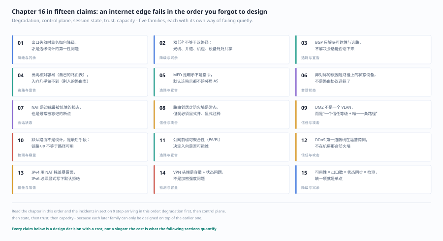
1. The First-Order Question Is Not "Which Provider", It Is "How Does the Business Degrade When the Exit Fails" · 第一性问题不是"选哪家运营商"，而是"出口失效时业务如何降级"
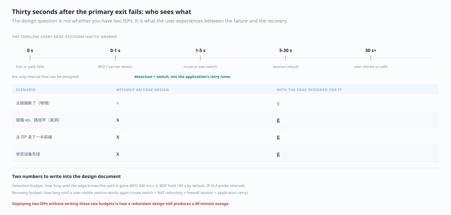
Choosing a provider is a procurement question; degradation is a design question. The same "dual ISP" plan can deliver a seamless experience or a ten-minute network-wide freeze — the difference is entirely whether the degradation behaviour was designed.
选运营商是采购问题，降级是设计问题。同一个"双 ISP"方案，可以做到业务无感，也可以做到全网卡死 10 分钟，差别全在降级动作是否被设计过。
| Failure scenario | Behaviour without design | Behaviour with design |
|---|---|---|
| Primary link down | Routing fails over, but every NAT session dies and VPNs reconnect | Session rebuild mechanisms, applications that retry, DNS with a backup exit |
| Primary link "up but not passing traffic" | The default route still points there → black hole | BFD / IP SLA / prefix withdrawal triggers the switchover |
| Primary ISP loses your prefix | Inbound traffic vanishes while outbound is fine | Keep a second inbound path + monitor inbound reachability |
| Stateful device fails | The session table is empty after failover | State synchronisation, or "accept session rebuild" written into the SLA |
| 失效场景 | 未设计时的表现 | 设计过的表现 |
|---|---|---|
| 主链路 down | 路由切换了，但 NAT 会话全断、VPN 重连 | 会话有重建机制、应用可重试、DNS 有备用出口 |
| 主链路"活着但不通" | 默认路由仍指过去 → 黑洞 | BFD / IP SLA / 前缀撤销触发切换 |
| 主 ISP 丢失你的前缀 | 入向流量消失，出向正常 | 保留第二条入向路径 + 监控入向可达性 |
| 状态设备故障 | 切换后会话表为空 | 状态同步，或"接受会话重建"并写入 SLA |
⚠️ The most common mistake: treating "dual ISP" as the answer to availability without writing down "in the 30 seconds after the primary exit fails, who sees what".
⚠️ 最常见失误：把"双 ISP"当作可用性答案，却没写出"主出口失效后的 30 秒内，谁会看到什么"。
2. "Dual ISP" Is Not "Dual Path": Physical Sharing Eats All the Redundancy · "双 ISP"不等于"双路径"：物理层的共享会吃掉全部冗余
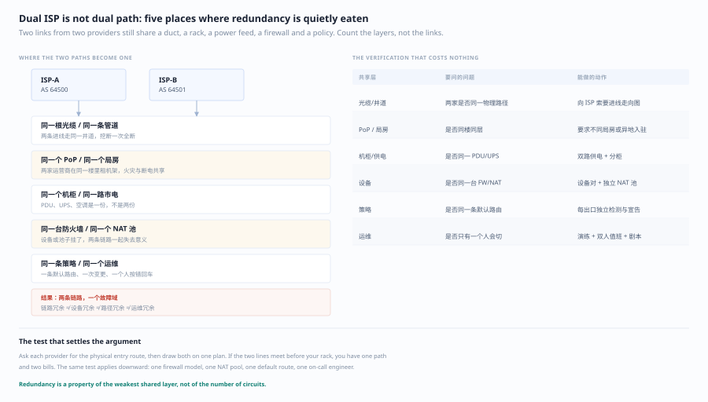
| Shared point | Typical symptom | How to verify |
|---|---|---|
| The same fibre into the building / the same duct | One dig cuts both providers | Demand written evidence of physical route separation |
| The same PoP / metro network | A central-office failure kills both | Ask whether both providers use the same building |
| The same edge router / the same rack | Device or power failure | Dual devices + dual power feeds + separate racks |
| The same NAT pool / the same firewall pair | Stateful device failure | State synchronisation or an active-active cluster |
| The same prefix-filter policy | One policy error takes effect on both | Roll changes out in batches |
| 共享点 | 典型表现 | 验证方法 |
|---|---|---|
| 同一根进楼光缆 / 同一段管道 | 施工挖断，两家同时断 | 要求运营商提供物理路由分离证明 |
| 同一个 PoP / 城域网 | 局房故障双断 | 询问两家是否同局房 |
| 同一台边缘路由器 / 同一机柜 | 设备或掉电故障 | 双设备 + 双路供电 + 不同机柜 |
| 同一个 NAT 池 / 同一套防火墙 | 状态设备故障 | 状态同步或双活集群 |
| 同一套前缀过滤策略 | 策略错误同时生效 | 变更分批下发 |
💡 The test: if two links can disappear in the same single construction accident, they are one link.
💡 判据：如果两条链路在任何一次"单点施工"里会同时消失，那它们就是一条链路。
3. BGP Only Solves "Reachability and Path Selection", Not "Whether the Session Survives" · BGP 只解决"可达性与选路"，不解决"会话能不能活"
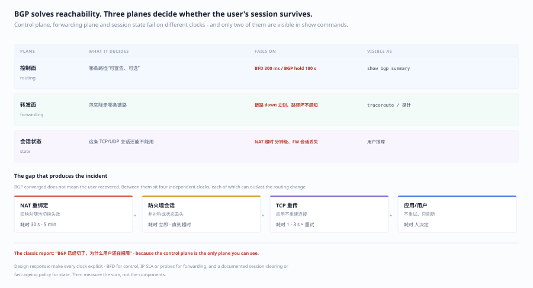
| Layer | Who is responsible | Behaviour after a failure |
|---|---|---|
| Control plane (is the prefix reachable) | BGP / IGP | Seconds to minutes of convergence |
| Forwarding plane (where do packets go) | FIB | Follows the control plane |
| Session plane (TCP / NAT / firewall state) | Hosts, NAT, firewalls | Completely outside BGP's control |
| 层次 | 由谁负责 | 故障后的行为 |
|---|---|---|
| 控制面（前缀是否可达） | BGP / IGP | 秒级到分钟级收敛 |
| 转发面（报文往哪走） | FIB | 跟随控制面 |
| 会话面（TCP / NAT / 防火墙状态） | 主机、NAT、防火墙 | BGP 完全管不到 |
So between "BGP converged" and "the user recovered" there is always a gap: NAT translations expire, firewall sessions are discarded, TCP retransmissions time out, and applications do not retry.
所以"BGP 收敛了"与"用户恢复了"之间，永远隔着一段：NAT 翻译失效、防火墙会话被丢弃、TCP 重传超时、应用不重试。
4. Outbound Load Sharing Is Easy; Inbound Is Nearly Impossible · 出向负载分担容易，入向几乎做不到
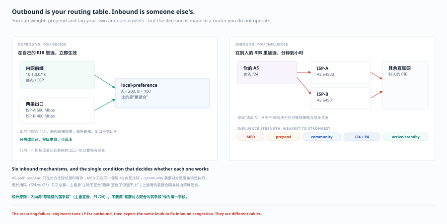
Outbound is your own routing table — one local preference settles it. Inbound is somebody else's routing table, where you can only make suggestions:
出向是你自己的路由表，一条 local preference 就定了；入向是别人的路由表，你只能"建议"：
| Mechanism | What it influences | Strength | Failure condition |
|---|---|---|---|
| AS-path prepending | Route selection in the upstream AS | Weak | The upstream ignores AS-path, or its own policy wins |
| MED | Multiple entry points to the same neighbour AS | Very weak | Essentially useless across ISPs |
| Community (provider-agreed) | Local preference inside the upstream | Medium | The provider has not configured it |
| More specific prefixes (/24 split) | Global | Medium-strong | Breaks aggregation and may be filtered |
| Active-standby (advertise only one) | Global | Strong | You must accept the standby link sitting idle |
| 手段 | 作用对象 | 强度 | 失效条件 |
|---|---|---|---|
| AS-path prepending | 上游 AS 的选路 | 弱 | 上游忽略 as-path 或自身策略优先 |
| MED | 同一邻居 AS 的多入口 | 很弱 | 跨 ISP 基本无效 |
| community（运营商约定） | 上游的本地偏好 | 中 | 运营商未配置 |
| 更具体前缀（/24 拆分） | 全局 | 中强 | 破坏聚合、被前缀过滤 |
| 主动-备用（只宣告一条） | 全局 | 强 | 需接受备用链路平时闲置 |
🎯 Design conclusion: design inbound around "influence, never control", and prepare a fallback for "inbound does not behave as expected": size both exits to peak capacity and make the application layer multi-active.
🎯 设计结论：入向要按"只能影响、不能控制"来设计，并准备"入向不如预期"的兜底：双出口都按峰值容量、应用层多活。
5. MED Is a Hint, Not an Instruction — and By Default Even the Hint Does Not Cross an AS · MED 是"暗示"不是"指令"，而且默认连暗示都不跨 AS
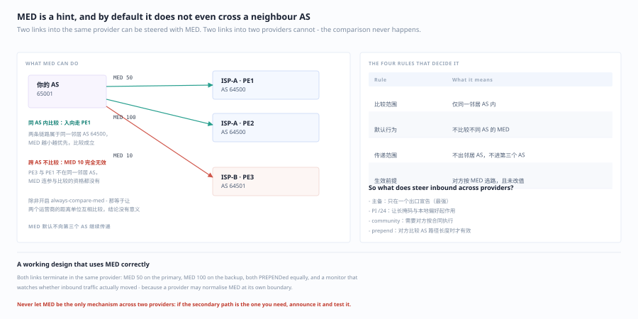
MED means "tell this neighbour AS which entry point is better from my side". There are two hard limits:
MED 的语义是"告诉我这个邻居 AS：从我这里进，哪个入口更好"。两个硬限制：
- By default it is only compared among paths from the same neighbour AS (
bgp always-compare-medchanges this, but violates the standard semantics and behaves inconsistently across vendors) - The neighbour may ignore it entirely (most providers honour customer MED, but not symmetrically)
- 默认只在同一邻居 AS 的多条路径间比较（
bgp always-compare-med可改，但违反标准语义，跨厂商行为不一致） - 邻居可以完全忽略（多数运营商尊重客户 MED，但不对等）
So using MED to make traffic "go out through provider A" is impossible in principle across ISPs.
所以"用 MED 让流量走 A 运营商"在跨 ISP 场景里从原理上不成立。
6. The Root Cause of Asymmetric Routing Is Never the Routing Protocol — It Is the Stateful Device on the Path · 非对称路由的根因从来不在路由协议，而在"路径上的状态设备"
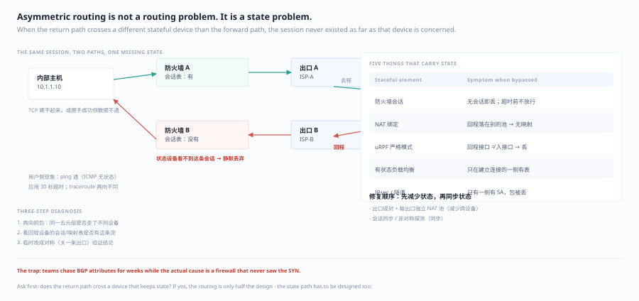
One packet leaving via A and returning via B is completely fine for stateless forwarding — that is exactly what IP was designed to do. What breaks is:
同一个包去程走 A、回程走 B，对无状态转发毫无问题 —— 这正是 IP 的设计初衷。出问题的是：
| Stateful thing | Consequence of asymmetry |
|---|---|
| Firewall session table | The return packet has no session → dropped by default (silent loss, the hardest to diagnose) |
| NAT translation table | The return packet's destination cannot be restored → dropped |
| uRPF strict mode | The return interface does not match the routing table → dropped |
| TCP proxy / load balancer | Half-open connections; the handshake succeeds but no data flows |
| 有状态的东西 | 不对称时的后果 |
|---|---|
| 防火墙会话表 | 回程包无会话 → 默认丢弃（静默丢包，最难查） |
| NAT 翻译表 | 回程包目的地址无法还原 → 丢弃 |
| uRPF 严格模式 | 回程接口与路由表不符 → 丢弃 |
| TCP 代理 / 负载均衡 | 半连接、握手成功但数据不通 |
💡 The test: "ping works but the application does not" plus a capture showing only one direction = check the stateful device first, not the routing.
💡 判据："能 ping 通但业务不通" + 抓包只看到单向 = 先查状态设备，不要先查路由。
7. NAT Is the Most Under-Rated "State" at the Edge, and the Most Easily Forgotten Break Point When Multihoming Switches Over · NAT 是互联网边缘最被低估的"状态"，也是多宿主切换时最容易被忽略的断点
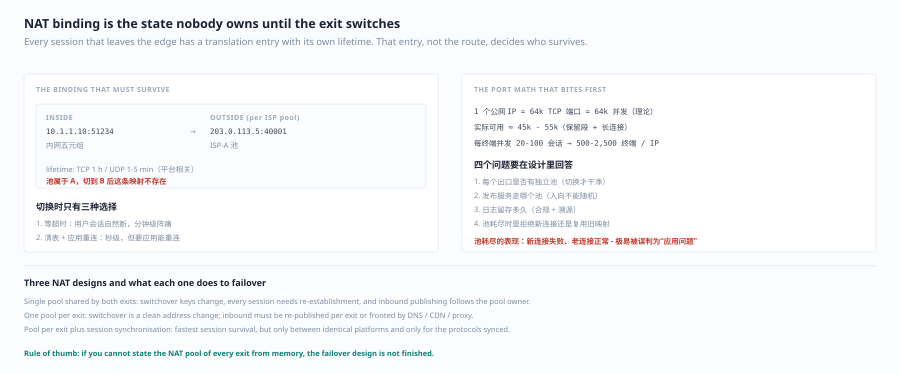
A NAT entry (inside IP:port ↔ outside IP:port) is runtime state with a lifetime. In a multihomed environment:
NAT 表项（内网 IP:端口 ↔ 公网 IP:端口）是有生命周期的运行时状态。多宿主环境里：
- The NAT pool is bound to an exit: the source address is translated into ISP-A's address, so return traffic must come back via ISP-A. When the primary link fails, established sessions cannot be restored over ISP-B (that address does not belong to it).
- NAT design must therefore answer: on failure, do we "wait for sessions to time out" (minutes) or "actively clear the table and make applications reconnect" (seconds)?
- Logging compliance: who used which public address at what time is an audit requirement; under CGNAT, no log means no traceability.
- NAT 池绑定出口：源地址被翻译成 ISP-A 的地址，回程必然走 ISP-A。主链路故障时，已经建立的会话不可能在 ISP-B 上恢复（地址不属它）。
- 因此 NAT 设计必须回答：故障时是"等会话超时"（分钟级），还是"主动清表 + 让应用重连"（秒级）。
- 日志合规：谁在什么时刻用了哪个公网地址，是审计要求；CGNAT 下没有日志等于无法溯源。
🎯 Conclusion: NAT is not "configure ip nat inside/outside", it is the session state machine of the edge. Multihoming designs must write "how sessions get rebuilt" down as a design item.
🎯 结论：NAT 不是"配个 ip nat inside/outside"，它是边缘的会话状态机。多宿主方案必须把"会话如何重建"写成设计条目。
8. Routing Neighbours Crossing the Firewall Is Normal — but It Needs Explicitly Cut Holes · 路由邻居穿过防火墙是常态，但需要显式"开洞"
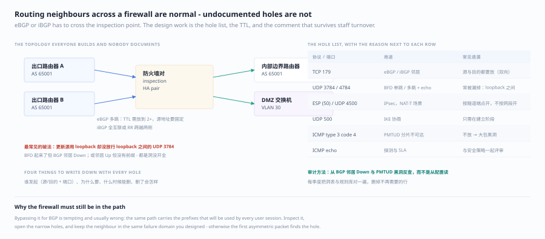
The typical edge topology is edge-router → firewall → internal network, but BGP neighbours often sit on opposite sides of the firewall:
典型的边缘拓扑是"边缘路由器—防火墙—内网"，但 BGP 邻居往往在防火墙两侧：
| Requirement | What must be permitted / configured | Common trap |
|---|---|---|
eBGP across the firewall (ebgp-multihop) |
TCP 179 in both directions, sufficient TTL | Only outbound was permitted; or ttl-security and multihop are both enabled, which conflict |
| iBGP across the firewall | TCP 179 plus loopback reachability | next-hop-self missed, so the next hop is unreachable |
| BFD | UDP 3784/4784 (plus echo mode) | The firewall drops UDP; BFD never comes up and there is no alarm |
| IPsec / NAT-T | UDP 500/4500, ESP (50) | Only UDP was permitted and ESP is blocked |
| PMTUD | ICMP type 3 code 4 | ICMP was blocked → large-packet black hole |
| 需求 | 必须放行/配置 | 常见坑 |
|---|---|---|
eBGP 跨防火墙多跳（ebgp-multihop） |
TCP 179 双向、TTL 足够 | 只放了 outbound；或同时开了 ttl-security 与 multihop，二者冲突 |
| iBGP 跨防火墙 | TCP 179 + 环回口可达 | next-hop-self 漏配，下一跳不可达 |
| BFD | UDP 3784/4784（及回声模式） | 防火墙丢弃 UDP，BFD 起不来却无告警 |
| IPsec / NAT-T | UDP 500/4500、ESP(50) | 只放 UDP，ESP 被拦 |
| PMTUD | ICMP type 3 code 4 | 拦掉 ICMP 导致"大包黑洞" |
💡 One rule of thumb: "holes opened for routing protocols" must be grouped separately in the policy and annotated with the reason, or the next engineer will close them during a "security hardening" exercise.
💡 一条经验：边缘设备的策略里，"为了路由协议而开的洞"必须单独成组并注释原因，否则下一位工程师会在"安全加固"时把它们关掉。
9. A DMZ Is Not a VLAN — It Is "One Trust Level Plus One Unique Path" · DMZ 不是一个 VLAN，而是"一个信任等级 + 一条唯一路径"
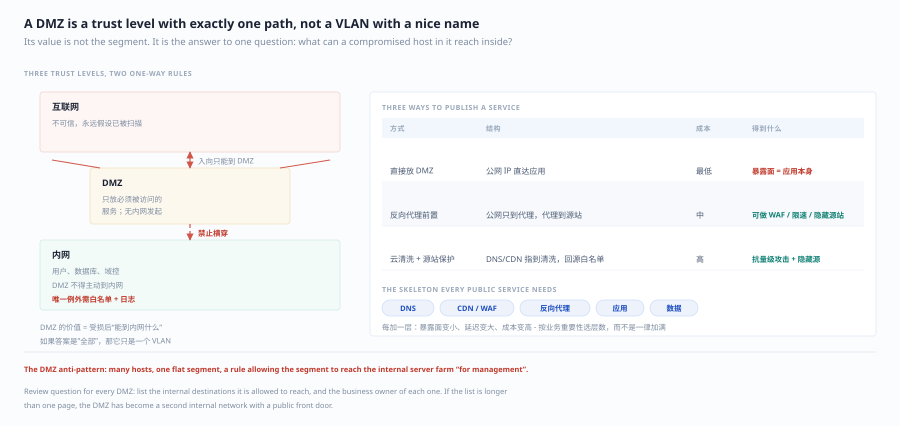
Putting public servers in a VLAN with public addresses is not a DMZ. A DMZ means: inbound traffic can only enter this layer, and lateral traffic cannot return to the internal network.
把公网服务器放进一个 VLAN、再给它一个公网地址，不叫 DMZ。DMZ 的实质是：入向流量只能进这一层，横向不能回到内网。
| Requirement | Concrete design |
|---|---|
| Single inbound entry | Only the edge firewall's publication policy can reach the DMZ; direct access to the DMZ management plane from inside is forbidden |
| Controlled outbound | DMZ → internal allows only "the necessary database/API calls", listed as a direction and port allow list |
| Independent management plane | Out-of-band management network / jump hosts, management traffic on a different path from business traffic |
| Loss containment when compromised | Hosts inside the DMZ isolated from each other by default (micro-segmentation); outbound only via a proxy |
| Logging and detection | Full traffic retention plus IDS; alert on anomalous outbound connections (callbacks are the strongest signal) |
| 要求 | 具体设计 |
|---|---|
| 入向唯一入口 | 只有边缘防火墙的发布策略能进 DMZ，禁止从内网直接访问 DMZ 管理面 |
| 出向受控 | DMZ 到内网只允许"必要的数据库/接口调用"，方向与端口白名单化 |
| 管理面独立 | 带外管理网 / 跳板机，管理流量与业务流量不同路径 |
| 被攻破后的止损 | DMZ 内主机之间默认隔离（微分段），出网仅经代理 |
| 日志与检测 | 全流量留存 + IDS，出向异常连接告警（回连是最强信号） |
⚠️ The most common incident chain: a DMZ server is compromised → it has a "permit rule to the internal database" → the attacker uses that rule to move laterally. A DMZ's value is defined by "what it can reach inside", not by "which VLAN it is in".
⚠️ 最常见的事故链：DMZ 服务器被拿下 → 它有一条"到内网数据库的放通规则" → 攻击者用这条规则横向移动。DMZ 的价值由"它能到内网什么"决定，而不是由"它在哪个 VLAN"决定。
10. A Default Route Is Not a Design — It Is a Last Resort · 默认路由不是设计，是最后手段
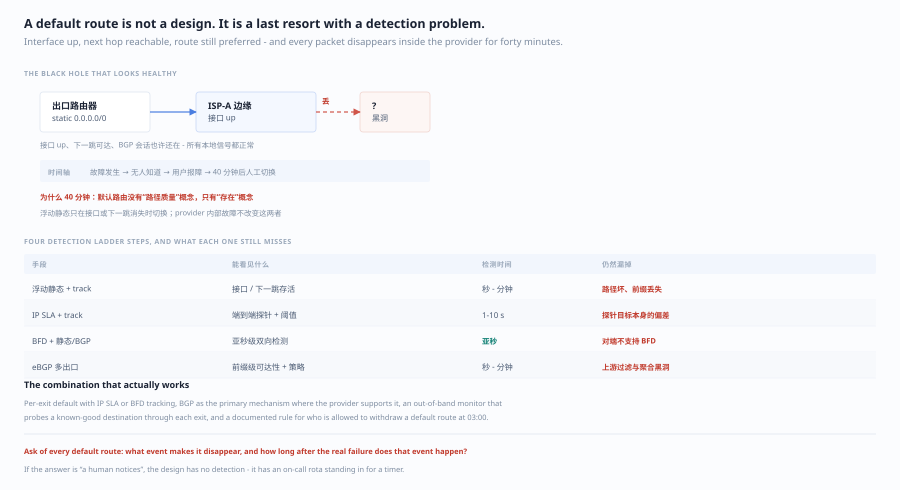
Two default routes and no health checking is the classic internet-edge black-hole factory:
两条默认路由 + 无健康检查，是互联网边缘最经典的黑洞制造机：
Outbound: 0.0.0.0/0 → ISP-A (AD 1) / ISP-B (AD 2, floating)
Symptom: a metro-network failure on the ISP-A side; the link stays up, the next hop is reachable, the route is still preferred → traffic goes into a black hole
出向：0.0.0.0/0 → ISP-A（AD 1） / ISP-B（AD 2 浮动）
现象：ISP-A 侧城域网故障，链路 up、下一跳可达、路由仍然优选 → 流量进黑洞
| Mechanism | Detection capability | Cost |
|---|---|---|
| Static floating route | Only sees "link down" | Cannot see "link up but path broken" |
| IP SLA + track | End-to-end probing (ICMP/DNS/TCP) | Probe targets and frequency must be designed; false positives cause flapping |
| BFD (with the provider, if supported) | Sub-second | Requires provider cooperation; mostly between your own devices |
| Dynamic routing (BGP) | Prefix withdrawal removes the path — closest to real reachability | Requires BGP with the provider; higher management cost |
| 手段 | 检测能力 | 代价 |
|---|---|---|
| 静态浮动路由 | 只能感知链路 down | 无法感知"链路通但路径坏" |
| IP SLA + track | 可探测端到端（ICMP/DNS/TCP） | 探测目标与频率要设计，误判会引起抖动 |
| BFD（对运营商，若支持） | 亚秒级 | 需要对方配合，多用于自有设备间 |
| 动态路由（BGP） | 前缀撤销即失效，最贴近真实可达性 | 需与运营商建立 BGP，管理成本高 |
🎯 Conclusion: "link up" and "path usable" are two different facts. Only end-to-end detection (SLA/BFD/BGP) can express the latter.
🎯 结论："链路 up" 与 "路径可用" 是两个不同的事实。 只有运行在端到端的检测（SLA/BFD/BGP）才能表达后者。
11. The "Aggregability" of Your Public Prefix Decides How Operable Your Inbound Side Is · 公网前缀的"可聚合性"决定你的入向可运维性
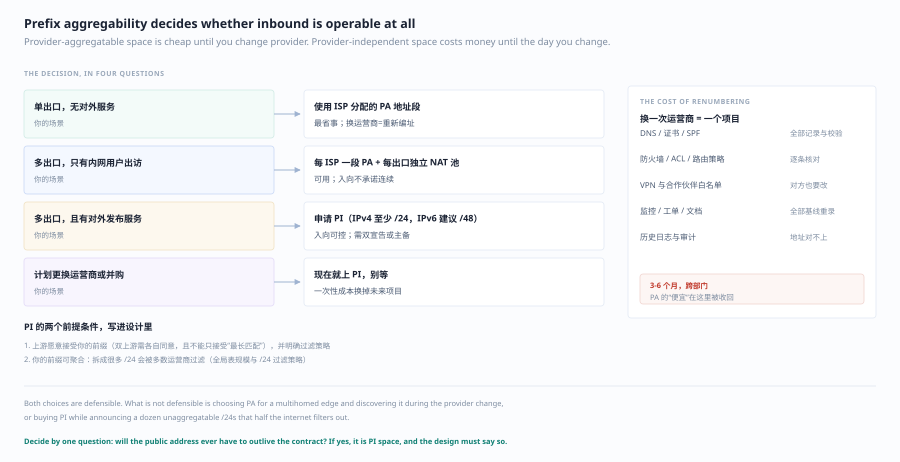
| Option | How you get it | Cost of changing provider | Where it fits |
|---|---|---|---|
| PA (Provider Aggregatable) | Allocated by the provider | Whole-company renumbering (DNS, ACLs, VPNs, allow lists, partners) | Single-homed, small scale |
| PI (Provider Independent) | Applied for from an RIR (usually a minimum /24) | Only BGP announcements change; addresses stay | Multihoming, public services, long-lived assets |
| 方案 | 获得方式 | 换运营商的代价 | 适用 |
|---|---|---|---|
| PA（Provider Aggregatable） | 运营商分配 | 全公司重编号（DNS、ACL、VPN、白名单、合作伙伴） | 单宿主、小规模 |
| PI（Provider Independent） | 向 RIR 申请（通常最小 /24） | 只改 BGP 宣告，地址不变 | 多宿主、对外服务、长期资产 |
💡 Test: as soon as you need "inbound services" or "multiple ISPs", PI is a necessity; otherwise one provider change becomes one company-wide project.
💡 判据：只要你需要"入向服务"或"多 ISP"，PI 就是必需品；否则一次运营商变更会变成一次全公司项目。
12. The First Line of DDoS Defence Is at the Provider, Not a Firewall in Your Rack · DDoS 的第一道防线在运营商侧，不在机房里的防火墙
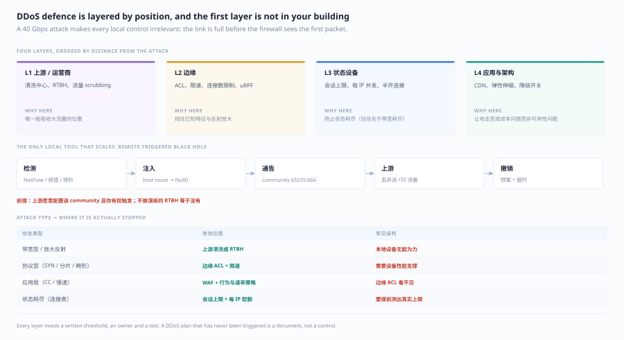
By the time attack traffic reaches your firewall it has already filled your exit links — at that point the strongest local device is useless (the packets cannot get in).
攻击流量在到达你的防火墙之前，已经把你的出口链路打满 —— 此时本地设备再强也没用（包进不来）。
| Attack type | Effective location | Mechanism |
|---|---|---|
| Volumetric (bandwidth) | Upstream / scrubbing centre / anycast | Traffic scrubbing, BGP RTBH (discard communities), scrubbing-centre diversion |
| Protocol (SYN flood, etc.) | Upstream + local | SYN cookies, connection limits, uRPF |
| Application (CC, slow attacks) | Local WAF / CDN | Behaviour analytics, rate limiting, challenge-response |
| Reflection/amplification (DNS/NTP/memcached) | Upstream + yourself | Close open resolvers, BCP38 egress filtering |
| 攻击类型 | 有效位置 | 手段 |
|---|---|---|
| volumetrics（带宽型） | 上游 / 清洗中心 / anycast | 流量清洗、BGP RTBH（丢弃社区）、清洗中心牵引 |
| 协议型（SYN flood 等） | 上游 + 本地 | SYN cookie、连接限制、uRPF |
| 应用型（CC、慢速攻击） | 本地 WAF / CDN | 行为分析、速率限制、挑战应答 |
| 反射放大（DNS/NTP/memcached） | 上游 + 自身 | 关闭开放解析、BCP38 出口过滤 |
🎯 Conclusion: a DDoS solution must include the design of the "diversion path" and the "injection path" (BGP announcement changes, tunnel injection, health checks), otherwise the scrubbing centre is just a contract.
🎯 结论：DDoS 方案必须包含"牵引路径"和"回注路径"的设计（BGP 宣告变化、隧道回注、健康检查），否则清洗中心只是一个合同。
13. IPv6 Is Not "Configure It Again" — It Is "Redesign the Exposure Surface After Removing NAT" · IPv6 不是"再配一遍"，是"取消 NAT 后重新设计暴露面"
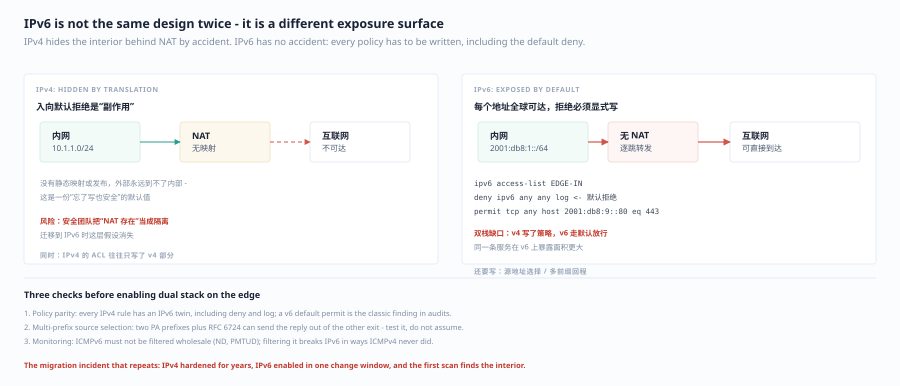
In the IPv4 era NAT incidentally provided "the internal network cannot initiate connections from outside". IPv6 has no NAT (NPTv6 aside), so every address is globally reachable and the exposure surface is defined entirely by ACL/firewall policy.
IPv4 时代，NAT 顺带提供了"内网默认不可从外部发起连接"的效果。IPv6 没有 NAT（NPTv6 例外），每个地址全球可达，暴露面完全由 ACL/防火墙策略决定。
| Item | IPv4 | IPv6 |
|---|---|---|
| Address source | Usually PA | PA (multiple prefixes) or PI (usually /48) |
| Multihoming | NAT plus exit binding | Several PA prefixes coexist, and source address selection (RFC 6724) becomes a new problem |
| Security baseline | NAT implies hiding | Inbound default deny must be explicit, or the internal network is directly exposed |
| Migration | — | Dual stack, NAT64/DNS64, 464XLAT |
| 项 | IPv4 | IPv6 |
|---|---|---|
| 地址来源 | PA 常见 | PA（多前缀）或 PI（/48 常见） |
| 多宿主 | NAT + 出口绑定 | 多个 PA 前缀并存，源地址选择（RFC 6724）成为新问题 |
| 安全基线 | NAT 隐含隐藏 | 必须显式默认拒绝入向，否则内网直接暴露 |
| 迁移 | — | 双栈、NAT64/DNS64、464XLAT |
⚠️ The most common IPv6 incident: during a dual-stack rollout the firewall only has IPv4 policy written, IPv6 falls through "default permit", and servers are scanned directly.
⚠️ 最常见 IPv6 事故：双栈上线时，防火墙只写了 IPv4 策略，IPv6 走"默认放行"，服务器直接被扫到。
14. Remote-Access VPN Headends Are a "Capacity + State" Problem, Not an "Encryption Strength" Problem · 远程接入 VPN 的头端是"容量 + 状态"问题，不是"加密强度"问题
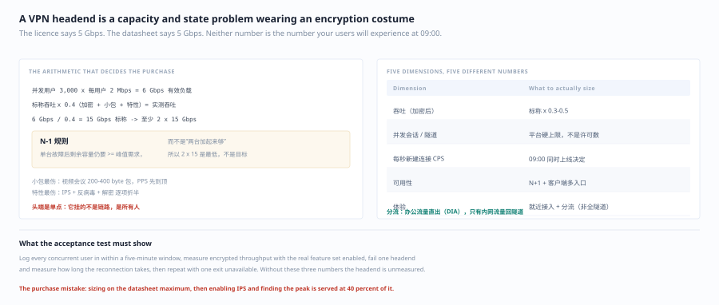
| Dimension | Real bottleneck | Design action |
|---|---|---|
| Throughput | Crypto offload (CPU / ASIC) | Size against "measured throughput with IPsec enabled", typically 30–60% of the datasheet |
| Concurrent tunnels | Session table / SA count | Plan for "peak online × 2" (reconnect overlap) |
| Availability | Headend single point | Dual headends + external LB / anycast / GSLB, with multiple addresses in the client profile |
| Experience | Full tunnelling back to HQ causes detours | Split tunnel + local DIA + cloud security (SASE) |
| Security | Only "did they connect" | Device posture checks + MFA + least privilege |
| 维度 | 真实瓶颈 | 设计动作 |
|---|---|---|
| 吞吐 | 加密卸载能力（CPU / ASIC） | 按"开启 IPsec 后的实测吞吐"选型，通常为标称的 30–60% |
| 并发隧道 | 会话表 / SA 数量 | 按"峰值在线 × 2（重连叠加）"规划 |
| 可用性 | 头端单点 | 双头端 + 外部 LB / Anycast / GSLB，客户端配置多地址 |
| 体验 | 全隧道回总部导致绕行 | split tunnel + 本地 DIA + 云安全（SASE） |
| 安全 | 只看"连上了" | 设备合规检查（posture）+ MFA + 最小权限 |
15. Internet-Edge Availability = Number of Exits × State Synchronisation × Detection; Miss One and It Is a Single Point · 互联网边缘的可用性 = 出口数量 × 状态同步 × 检测手段，缺一项即单点
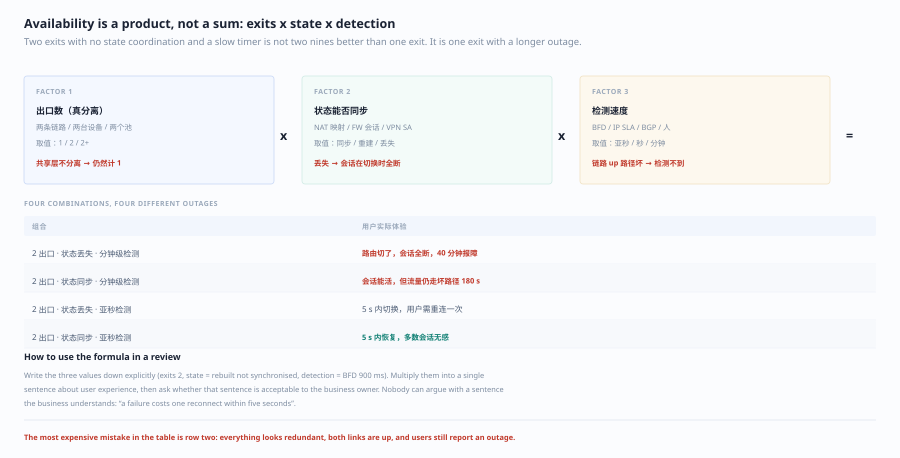
The three multiply:
三者是乘法关系：
| Combination | Result |
|---|---|
| Dual exits, no state sync, no detection | On failure "reachable but every session dies", perceived as "the network is broken" |
| Dual exits, state sync, no detection | The primary path breaks and nothing switches; the redundancy was bought for nothing |
| Single exit, with detection | Detection is sensitive but there is nowhere to switch to |
| All three present | On failure "some sessions break + seconds to recover + applications can retry" |
| 组合 | 结果 |
|---|---|
| 双出口，无状态同步，无检测 | 故障时"能通但会话全断"，感知为"网坏了" |
| 双出口，有状态同步，无检测 | 主路径坏了不切换，冗余白买 |
| 单出口，有检测 | 检测很灵敏，但没地方可切 |
| 三者齐备 | 故障时"部分会话中断 + 秒级恢复 + 应用可重试" |
💡 In one sentence: redundancy is not "one more line", it is "one more line + state that survives + the ability to notice it is time to switch".
💡 一句话：冗余不是"多一条线"，而是"多一条线 + 状态能延续 + 能发现该切了"。
The Six-Step Internet Edge Design Method · 互联网边缘设计的六步方法论
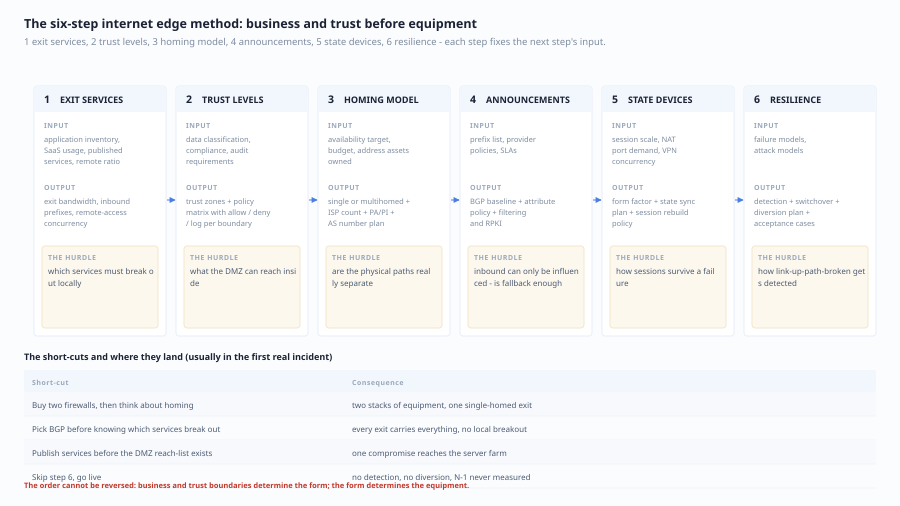
The easiest mistake at the edge is to start from "choose a provider, negotiate bandwidth". The correct order is: define the exit services, then the trust levels, then the homing model, then routing and announcements, then the stateful devices, and finally resilience and validation.
边缘设计最容易犯的错，是从"选运营商、谈带宽"开始。正确顺序是：先定出口业务，再定信任等级，再定宿主模型，再定路由与宣告，再定状态设备，最后定弹性与验证。
1 Exit services What goes to the internet / what is published inbound / what needs remote access -> exit requirements list
2 Trust levels Internet / DMZ / internal / management -> policy matrix (four boundaries)
3 Homing model Single or multihomed, single or multi-ISP, PA or PI, own AS or not
4 Announcements AS number, prefixes, attribute policy, inbound influence, prefix filtering and security
5 State devices Placement of NAT / firewall / LB / VPN headend, state sync method, session rebuild policy
6 Resilience DDoS diversion, detection (SLA/BFD/BGP), fault-injection cases, N-1 capacity
① 定出口业务 哪些要出公网 / 哪些要入向发布 / 哪些要远程接入 → 出口需求清单
② 定信任等级 互联网 / DMZ / 内部 / 管理 → 策略矩阵（四条边界）
③ 定宿主模型 单宿主 or 多宿主、单 ISP or 多 ISP、PA or PI、是否自有 AS
④ 定路由宣告 AS 号、前缀、属性策略、入向影响手段、前缀过滤与安全
⑤ 定状态设备 NAT / 防火墙 / LB / VPN 头端的位置、状态同步方式、会话重建策略
⑥ 定弹性验证 DDoS 牵引、检测手段（SLA/BFD/BGP）、故障注入用例、容量 N−1
Expanding the Six Steps: Inputs, Outputs and the Hurdle You Cannot Skip · 六步展开：每步的输入、输出与"过不去的坎"
| Step | Input | Output (deliverable) | The hurdle that must be settled on the spot |
|---|---|---|---|
| 1 Exit services | Application inventory, SaaS usage, public services, remote-work ratio | Exit bandwidth / inbound prefixes / remote-access concurrency | Which services must go out locally (decides DIA versus centralised exit) |
| 2 Trust levels | Data classification, compliance, audit requirements | Trust zones + policy matrix (allow/deny/log) | What can the DMZ reach inside (decides the damage radius once compromised) |
| 3 Homing model | Availability target, budget, address assets | Single/multihomed + ISP count + PI/PA + AS plan | Are the physical paths genuinely separate (two contracts is not two paths) |
| 4 Announcements | Prefix list, provider policies, SLAs | BGP configuration baseline + attribute policy + filtering and RPKI | Inbound can only be "influenced" — is the fallback capacity enough |
| 5 State devices | Session scale, NAT port demand, VPN concurrency | Device form factor + state sync plan + session rebuild policy | How NAT/firewall sessions survive a failure (the most common gap) |
| 6 Resilience | Failure models, attack models | Detection + switchover + diversion plan + acceptance cases | How "link up but path broken" gets detected |
| 步骤 | 输入 | 输出（交付物） | 过不去的坎（必须当场解决） |
|---|---|---|---|
| ① 定出口业务 | 应用清单、SaaS 使用、对外服务、远程办公比例 | 出口带宽 / 入向前缀 / 远程接入并发 | 哪些业务必须"就近出网"（决定 DIA 与集中出口的取舍） |
| ② 定信任等级 | 数据分类、合规、审计要求 | 信任区划分 + 策略矩阵（允许/拒绝/记录） | DMZ 能到内网什么（决定被攻破后的损害半径） |
| ③ 定宿主模型 | 可用性目标、预算、地址资产 | 单/多宿主 + ISP 数量 + PI/PA + AS 方案 | 物理路径是否真的分离（不是合同上的两家） |
| ④ 定路由宣告 | 前缀清单、运营商策略、SLA | BGP 配置基线 + 属性策略 + 过滤与 RPKI | 入向只能"影响"，兜底容量是否够 |
| ⑤ 定状态设备 | 会话规模、NAT 端口需求、VPN 并发 | 设备形态 + 状态同步方案 + 会话重建策略 | 故障时 NAT/防火墙会话怎么活（最常见的空档） |
| ⑥ 定弹性验证 | 故障模型、攻击模型 | 检测+切换+牵引方案 + 验收用例 | "链路 up 但路径坏"如何被发现 |
🎯 The order cannot be reversed: buy two firewalls first and then think about multihoming, and you always end up with "two stacks of equipment and a single-homed exit". Business and trust boundaries determine the form; the form determines the equipment.
🎯 顺序不能反：先买两台防火墙再想"要不要多宿主"，结果一定是"设备堆了两套、出口还是单点"。业务与信任边界决定形态，形态决定设备。
Common Short-Cuts at Each Step and Their Consequences · 每一步的常见"跳步"及其后果
| Short-cut | Consequence (usually erupts at the first real failure) |
|---|---|
| Skip 1, go to 3 | All traffic backhauls to HQ for internet access; SaaS experience is poor and exit bandwidth is upgraded every year |
| Skip 2, buy hardware | Firewall policy is "default permit"; the DMZ is at the same level as the internal network |
| Skip 3, negotiate links | Two ISPs terminate in the same rack; redundancy is in the contract, not in physics |
| Skip 4, configure a default route | No dual-ISP path selection; the inbound side is completely passive |
| Skip 5, go live | After switchover "the network is up but the business is not"; nobody owns NAT sessions |
| Skip 6, accept as-is | Only "pull one cable" is tested, never "provider-side failure" or "attack" |
| 跳步 | 后果（通常在第一次真故障时爆发） |
|---|---|
| 跳过①直接③ | 所有流量集中回总部出网，SaaS 体验差、出口带宽年年加 |
| 跳过②直接买设备 | 防火墙策略"默认放行"，DMZ 与内网同级 |
| 跳过③直接谈链路 | 两家 ISP 同进一个机柜，冗余写在合同里，不在物理上 |
| 跳过④直接配默认路由 | 无双 ISP 选路能力，入向完全被动 |
| 跳过⑤直接上线 | 切换后"网络通了、业务没通"，NAT 会话无人负责 |
| 跳过⑥直接验收 | 只测"拔一根线"，没测"运营商侧故障"与"攻击" |
Foundation Topics · 基础内容
1. Edge Functions and Layering · 一、互联网边缘的功能与分层
What the Internet Edge Actually Has to Do (Function List) · 互联网边缘到底要做什么（功能清单）
The book splits edge responsibilities into four classes: connect, protect, publish, attach. In practice, write the design document as "one verifiable capability per responsibility":
原书把边缘的职责拆成"连接、保护、发布、接入"四类。落地时建议按"每条职责对应一个可验证的能力"来写设计文档：
| Responsibility | Capability | Common placement | How to verify |
|---|---|---|---|
| Connect | BGP with one or more ISPs, multihomed path selection | Edge routers | show ip bgp summary plus prefix reachability probes |
| Protect | Stateful inspection, IPS, rate limiting, uRPF, DDoS mitigation | Firewall / scrubbing centre | Attack drills, policy audits |
| Publish | Public services (web/mail/VPN) exposed through the DMZ | DMZ + reverse proxy | External scanning + exposure inventory |
| Attach | Employee remote access (VPN / ZTNA) | VPN headend | Concurrency load tests + authentication audits |
| Translate | NAT/PAT, address reuse, log retention | Edge router or firewall | Session table capacity + log sampling |
| Policy | QoS marking, egress rate limiting, service steering | Edge routers | Measured bandwidth per traffic class |
| 职责 | 能力 | 常见落点 | 验证方式 |
|---|---|---|---|
| 连接 | 与一个或多个 ISP 建立 BGP，多宿主选路 | 边缘路由器 | show ip bgp summary + 前缀可达性探测 |
| 保护 | 状态检测、IPS、限速、uRPF、DDoS 缓解 | 防火墙 / 清洗中心 | 攻击演练、策略审计 |
| 发布 | 对外服务（Web/邮件/VPN）通过 DMZ 暴露 | DMZ + 反向代理 | 外部扫描 + 暴露面清单 |
| 接入 | 员工远程接入（VPN / ZTNA） | VPN 头端 | 并发压测 + 认证审计 |
| 翻译 | NAT/PAT、地址复用、日志留存 | 边缘路由器或防火墙 | 会话表容量 + 日志抽样 |
| 策略 | QoS 标记、出口限速、业务分流 | 边缘路由器 | 逐类流量的实测带宽 |
⚠️ Note the overlap of responsibilities: NAT can live on the edge router or on the firewall. Where it lives decides who owns the state, and therefore who owns session rebuild on failure. A given NAT translation must have exactly one owner.
⚠️ 注意"职责重叠"：NAT 可以放在边缘路由器，也可以放在防火墙。放哪里决定了谁是状态的所有者，也决定了故障时谁来负责会话重建。一个 NAT 只能有一个所有者。
The Three Edge Layers (the Book's Three-Tier Edge Structure) · 三种边缘分层（原书的三层结构）
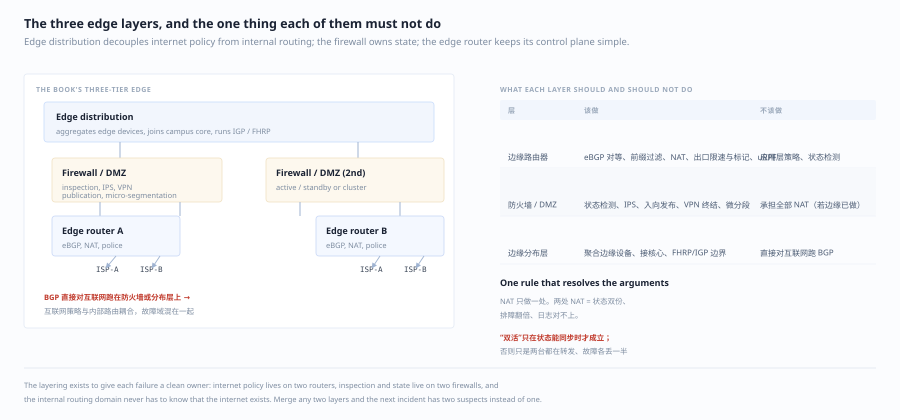
+------------------------------------------+
| Edge Distribution layer |
| Aggregates edge devices, connects to |
| the campus core, runs the IGP |
+---+----------------------------------+---+
+---------+---------+ +---------+---------+
| Firewall / DMZ | | Firewall / DMZ |
| inspection, IPS, | | (second set, |
| VPN termination | | active/standby) |
+---------+---------+ +---------+---------+
+---------+---------+ +---------+---------+
| Edge router | | Edge router |
| (ASBR): BGP, NAT | | (ASBR) |
+----+---------+----+ +----+---------+----+
ISP-A ISP-B ISP-A ISP-B
┌──────────────────────────────────────────┐
│ 互联网边缘分布层（Edge Distribution） │
│ 聚合多台边缘设备、连接园区核心、跑 IGP │
└───┬──────────────────────────┬───────────┘
┌─────────┴─────────┐ ┌─────────┴─────────┐
│ 防火墙 / DMZ 层 │ │ 防火墙 / DMZ 层 │
│ 状态检测、IPS、VPN │ │ （第二套，双活/主备）│
└─────────┬─────────┘ └─────────┬─────────┘
┌─────────┴─────────┐ ┌─────────┴─────────┐
│ 边缘路由器（ASBR） │ │ 边缘路由器（ASBR） │
│ BGP、NAT、限速 │ │ │
└────┬─────────┬────┘ └────┬─────────┬────┘
ISP-A ISP-B ISP-A ISP-B
| Layer | What it should do | What it should not do | Why |
|---|---|---|---|
| Edge router | eBGP peering, prefix filtering, NAT, egress rate limiting and marking, uRPF | Complex application-layer policy, stateful inspection | It is the "control plane + high-speed forwarding" position; simpler is more stable |
| Firewall / DMZ | Stateful inspection, IPS, inbound publication, VPN termination, micro-segmentation | Carrying all NAT (if the edge already does it) | Two NATs means doubled state and doubled troubleshooting |
| Edge distribution | Aggregate edge devices, connect the campus core, FHRP/IGP boundary | Running BGP directly to the internet | Decouples "internet policy" from "internal routing", giving a clean failure domain |
| 层 | 该做的事 | 不该做的事 | 为什么 |
|---|---|---|---|
| 边缘路由器 | eBGP 对等、前缀过滤、NAT、出口限速与标记、uRPF | 复杂应用层策略、状态检测 | 它是"控制面 + 高速转发"的位置，越简单越稳 |
| 防火墙 / DMZ | 状态检测、IPS、入向发布、VPN 终结、微分段 | 承担全部 NAT（若边缘已做） | 两处 NAT 会造成状态双份、排障翻倍 |
| 边缘分布层 | 聚合边缘设备、接园区核心、FHRP/IGP 边界 | 直接对互联网跑 BGP | 让"互联网策略"与"内部路由"解耦，故障域清晰 |
Capacity and Form-Factor Choices at the Edge · 边缘各层的容量与形态选择
| Form | Where it fits | Advantages | Cost |
|---|---|---|---|
| Single edge router + single firewall | Small, non-critical exit | Cheap, simple | Every part is a single point |
| Dual edge routers + dual firewalls (active/standby) | Medium, ordinary enterprises | Device redundancy, simple configuration | Standby idles, sessions break on switchover |
| Dual edge + dual firewalls (active/active or cluster) | Large, public services | Additive capacity, fast switchover | Complex state sync, hard to troubleshoot |
| Edge router acting as firewall (converged) | Branches, small sites | Fewer devices | Limited security capability and performance |
| Everything in the cloud (SASE / cloud edge) | Many branches, mobile workforce | Unified policy, local internet breakout | Depends on internet quality and the vendor |
| 形态 | 适用 | 优点 | 代价 |
|---|---|---|---|
| 单边缘路由器 + 单防火墙 | 小型、非关键出口 | 便宜、简单 | 全单点 |
| 双边缘路由器 + 双防火墙（主备） | 中型、一般企业 | 设备冗余、配置简单 | 备机闲置、切换有会话断 |
| 双边缘 + 双防火墙（双活/集群） | 大型、对外服务 | 容量叠加、切换快 | 状态同步复杂、排障难 |
| 边缘路由器兼做防火墙（融合） | 分支、小站点 | 设备少 | 安全能力与性能受限 |
| 全部功能上云（SASE / 云边缘） | 多分支、移动办公 | 策略统一、就近出网 | 依赖互联网质量与供应商 |
💡 Rule of thumb: "active/active" is only active/active when the state can be synchronised; otherwise it is just "two boxes both forwarding, each losing half the sessions on failure".
💡 一条经验："双活"只有在"状态能同步"时才是双活；否则它只是"两台都在转发、故障时各丢一半会话"。
2. Multihoming Design: Three Scenarios · 二、多宿主设计：三种场景
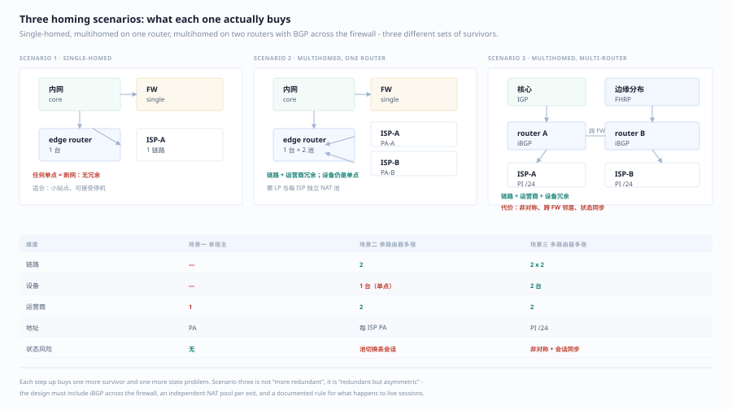
Scenario 1: Single-Homed · 场景一：单宿主
One link, one ISP, one edge device. No redundancy at all — any single failure means no connectivity.
一条链路、一个 ISP、一台边缘设备。没有任何冗余，任何一处故障都等于断网。
| Dimension | Explanation |
|---|---|
| Fits | Branches, non-critical services, cost-sensitive sites |
| Addressing | Usually PA (provider-allocated), no BGP required |
| Routing | A default route is enough, at most plus IP SLA |
| Risk | Any failure of link / device / provider → total outage |
| Mandatory mitigation | 4G/5G backup (floating default + health checks), and moving services to the cloud to reduce local dependency |
| 维度 | 说明 |
|---|---|
| 适用 | 分支、非关键业务、成本敏感站点 |
| 地址 | 通常 PA（运营商分配），无需 BGP |
| 路由 | 默认路由即可，最多加 IP SLA |
| 风险 | 链路 / 设备 / 运营商任一处故障 → 全断 |
| 必做的补救 | 4G/5G 备份（浮动默认 + 健康检查）、业务上云以降低本地依赖 |
Scenario 2: Multihomed, Single Router · 场景二：多宿主，单路由器
Several links (same ISP or different ISPs) terminate on one edge router.
多条链路（同 ISP 或不同 ISP）接到同一台边缘路由器。
| Dimension | Explanation |
|---|---|
| Redundancy gained | Link level, provider level (if different ISPs) |
| Redundancy not gained | Device level — a router failure takes every exit down at once |
| Addressing | PI recommended (almost mandatory with multiple ISPs) |
| Routing | BGP is required to steer "per prefix / per session" |
| Typical trap | Replacing BGP with two default routes plus a floating static, which makes inbound completely passive and outbound undifferentiated |
| 维度 | 说明 |
|---|---|
| 得到的冗余 | 链路级、运营商级（若不同 ISP） |
| 没得到的冗余 | 设备级 —— 路由器故障时全部出口同时失效 |
| 地址 | 建议 PI（多 ISP 时几乎是必需） |
| 路由 | 需要 BGP 才能做"按前缀 / 按会话"的精细分流 |
| 典型坑 | 用两条默认路由 + 浮动静态代替 BGP，导致入向完全被动、出向无法按业务分流 |
⚠️ The most common misuse: writing it into the design document as a "high-availability solution", then losing every exit when the rack loses power.
⚠️ 它最常见的误用：被当成"高可用方案"写进设计文档，却在机柜掉电时全线中断。
Scenario 3: Multihomed, Multiple Routers · 场景三：多宿主，多路由器
Each edge router connects to a different ISP (or a different PE of the same ISP), giving redundancy on both devices and links.
每台边缘路由器连接不同 ISP（或同一 ISP 的不同 PE），设备与链路双重冗余。
| Form | Description | State consistency | Where it fits |
|---|---|---|---|
| Active-standby | The primary carries all traffic; the standby only keeps the BGP session up | Simple (switchover = session rebuild) | Small-medium, seconds of interruption acceptable |
| Load sharing (per prefix) | Different internal networks use different exits | Medium (needs NAT pool / prefix binding) | Businesses with clear traffic classes |
| Load sharing (per session / bandwidth) | The same network uses both exits, per-flow steering | Complex (NAT sessions and return path must agree) | High-volume, needs fine-grained operation |
| Active-active cluster (firewalls) | Two devices share session state | Strong (needs cluster/HA sync) | Public services needing imperceptible failover |
| 形态 | 描述 | 状态一致性 | 适用 |
|---|---|---|---|
| 主动-备用 | 主设备承载全部流量，备设备只维持 BGP 会话 | 简单（切换即重建会话） | 中小规模、可接受秒级中断 |
| 负载分担（按前缀） | 不同内网网段走不同出口 | 中（需 NAT 池/前缀绑定） | 有明确流量分类的业务 |
| 负载分担（按会话/带宽） | 同一网段双出口，逐流选路 | 复杂（NAT 会话与回程必须一致） | 大流量、需精细运营 |
| 双活集群（防火墙） | 两台设备共享会话状态 | 强（需集群/HA 同步） | 对外服务、要求无感切换 |
+-------------- Internal network (campus/DC) --------------+
| |
+-----+-----+ +-----+-----+
| Edge rtr A |<------ iBGP (loopbacks, via firewall) ---->| Edge rtr B |
| AS 65001 | | AS 65001 |
+-----+------+ +------+-----+
eBGP | advertised PI prefix + NAT pool eBGP |
ISP-A (AS 100) ISP-B (AS 200)
┌─────────────── 内部网络（园区/DC）───────────────┐
│ │
┌─────┴─────┐ ┌─────┴─────┐
│ 边缘路由器 A │◄──── iBGP（环回口，跨防火墙放行）───►│ 边缘路由器 B │
│ AS 65001 │ │ AS 65001 │
└─────┬─────┘ └─────┬─────┘
eBGP │ 宣告 PI 前缀 + NAT 池 eBGP │
ISP-A（AS 100） ISP-B（AS 200）
Three hard requirements for the multi-router design:
多路由器设计的三条硬要求：
- iBGP between the two devices (or at least a consistent prefix and policy view) is mandatory; otherwise a prefix learned by one is not passed to the other, and exit switching produces the mismatch "the route exists but the next hop is different".
next-hop-selfmust be configured (in iBGP scenarios), otherwise internal devices receive an external next hop that they cannot reach.- NAT pools must be split per exit (pool per ISP), with "how old sessions end on failure" stated explicitly.
- 两台设备之间必须有 iBGP（或至少一致的前缀与策略视图），否则一台学到的前缀不会传给另一台，出口切换会出现"路由存在但下一跳不同"的错位。
next-hop-self必须配（iBGP 场景），否则内部设备拿到的下一跳是外部地址，不可达。- NAT 池必须按出口分开（pool per ISP），并明确"故障时旧会话如何结束"。
Comparing the Three Scenarios (the Book's Table 16-1 plus additions) · 三种场景综合对比（原书 Table 16-1 + 补充）
| Dimension | Single-homed | Multihomed (single router) | Multihomed (multiple routers) |
|---|---|---|---|
| Link redundancy | None | Yes | Yes |
| Device redundancy | None | None | Yes |
| Provider redundancy | None | Depends (multi-ISP possible) | Yes (usually multi-ISP) |
| BGP required | No | Yes (recommended) | Yes (mandatory) |
| PI addressing required | No | Yes with multiple ISPs | Yes |
| State complexity | Low | Medium | High (NAT/firewall/sessions) |
| Outbound controllability | None | Medium | High |
| Inbound controllability | None | Low | Low (still only influence) |
| Cost | Lowest | Medium | Highest |
| Typical failure perception | Total outage | Device failure = total outage | Sessions break, links remain usable |
| 维度 | 单宿主 | 多宿主（单路由器） | 多宿主（多路由器） |
|---|---|---|---|
| 链路冗余 | 无 | 有 | 有 |
| 设备冗余 | 无 | 无 | 有 |
| 运营商冗余 | 无 | 视方案（可多 ISP） | 有（通常多 ISP） |
| 需要 BGP | 否 | 是（推荐） | 是（必需） |
| 需要 PI 地址 | 否 | 多 ISP 时是 | 是 |
| 状态复杂度 | 低 | 中 | 高（NAT/防火墙/会话） |
| 出向可控性 | 无 | 中 | 高 |
| 入向可控性 | 无 | 低 | 低（仍只能影响） |
| 成本 | 最低 | 中 | 最高 |
| 典型故障感知 | 全断 | 设备故障全断 | 会话断，链路可用 |
🎯 One criterion: "can you accept that one device determines the connectivity of the entire enterprise" decides scenario 2 versus scenario 3. Every other factor (cost, addressing, operations) is secondary.
🎯 一条判据："能不能接受一台设备决定全网出口"，决定你选场景二还是场景三。 其他因素（成本、地址、运维）都是次要的。
Multihoming Failure-Mode Checklist (Every Review Should Ask These) · 多宿主的失败模式清单（评审必问）
| # | Failure mode | Symptom | Check point |
|---|---|---|---|
| 1 | Both links on the same physical path | Both fail together | Written proof of route separation from the providers |
| 2 | One device carrying both ISPs | Device failure kills everything | Topology and rack diagram |
| 3 | One NAT pool across ISPs | Sessions cannot be restored after a switchover | NAT configuration and pool ownership |
| 4 | No iBGP | Prefix black hole after one device fails | BGP neighbour table |
| 5 | No next-hop-self |
Internal unreachability | BGP next hop |
| 6 | No bidirectional prefix filtering | Bogus announcements / bad prefixes accepted | Prefix lists and max-prefix |
| 7 | No inbound monitoring | The upstream drops your prefix and you never know | External probes (multi-location ping/HTTP) |
| 8 | No N−1 exit capacity | One exit carries 100%, congestion on switchover | N−1 bandwidth calculation |
| # | 失败模式 | 症状 | 检查点 |
|---|---|---|---|
| 1 | 两条链路同物理路径 | 同时断 | 运营商路由分离证明 |
| 2 | 同一台设备承载双 ISP | 设备故障全断 | 拓扑与机柜图 |
| 3 | 单 NAT 池跨 ISP | 切换后会话不可恢复 | NAT 配置与池归属 |
| 4 | 无 iBGP | 一台故障后前缀黑洞 | BGP 邻居表 |
| 5 | 无 next-hop-self |
内部不可达 | BGP 表下一跳 |
| 6 | 无双向前缀过滤 | 误宣告 / 接收错误前缀 | 前缀列表与 max-prefix |
| 7 | 无入向监控 | 前缀被上游丢弃却不知 | 外部探测（多地点 ping/HTTP） |
| 8 | 无双出口容量冗余 | 单出口承载 100%，切换即拥塞 | N−1 带宽核算 |
Addressing and AS Number: Three Decisions · 地址与 AS 号：三个决定
| Decision | Options | Impact |
|---|---|---|
| Addresses | PA vs PI | Cost of changing provider; inbound service capability; multihoming feasibility |
| AS number | Public AS vs private AS (64512–65534) | A private AS needs remove-private-as at the provider; with multiple ISPs it may be dropped, causing loops or unreachability |
| Peering style | Directly connected eBGP vs multihop eBGP (across a firewall) | Multihop needs ebgp-multihop plus TCP 179 permitted; it conflicts with ttl-security |
| 决定 | 选项 | 影响 |
|---|---|---|
| 地址 | PA vs PI | 换运营商的成本；入向服务能力；多宿主可行性 |
| AS 号 | 自有公网 AS vs 私有 AS（64512–65534） | 私有 AS 需运营商 remove-private-as，多 ISP 时易被丢弃导致环路/不可达 |
| 对等方式 | 直连 eBGP vs 多跳 eBGP（跨防火墙） | 多跳需 ebgp-multihop + 179 放行；与 ttl-security 冲突 |
⚠️ The private-AS trap: when the same private AS number appears on both ISP sides, standard BGP loop detection treats it as "my own AS" and drops the path. For multihoming, apply for a public AS, or make sure both providers correctly implement
remove-private-as(without breaking your own path selection).
⚠️ 私有 AS 的陷阱：同一私有 AS 号在两个 ISP 侧同时出现时，标准 BGP 环路检测会把它当作"自己的 AS"而丢弃。多 ISP 场景建议申请公网 AS，或确保两家运营商都正确执行
remove-private-as（且不因此破坏你自己的选路）。
3. Using BGP Attributes in Multihoming · 三、BGP 属性在多宿主中的用法
Attribute Quick Reference: First Work Out Whether It Steers Outbound or Inbound · 属性速查：先分清"管出向"还是"管入向"
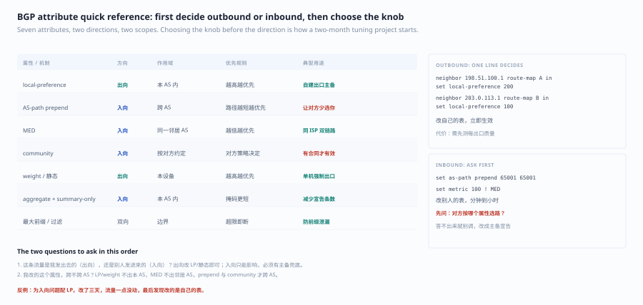
| Attribute | Scope of propagation | Higher is better? | Direction it steers | Typical use |
|---|---|---|---|---|
| Weight | Local only (Cisco proprietary) | Yes | Outbound | Force preference for a neighbour on this device |
| Local Preference | The whole AS (iBGP) | Yes | Outbound | AS-wide exit preference |
| AS_PATH | Global | Shorter is better | Inbound (influences you) | Prepending to push inbound traffic elsewhere |
| MED | Neighbouring AS (compared only within the same neighbour AS) | Lower is better | Inbound | Steering between multiple entry points of the same ISP |
| Origin | Global | i < e < ? | Outbound | Usually left alone to avoid inconsistency |
| Next Hop | Global | — | Both | next-hop-self to fix reachability |
| Community | Global (transitive) | — | Both | Provider-agreed path selection / blackholing / scope control |
| 属性 | 传播范围 | 越大越好？ | 作用方向 | 典型用法 |
|---|---|---|---|---|
| Weight | 本机（Cisco 私有） | 是 | 出向 | 本机强制优选某邻居 |
| Local Preference | 本 AS（iBGP） | 是 | 出向 | 全 AS 统一出口偏好 |
| AS_PATH | 全局 | 越短越好 | 入向（对你有影响） | prepending 让入向走另一条 |
| MED | 相邻 AS（同邻居才比较） | 越小越好 | 入向 | 同 ISP 多入口引导 |
| Origin | 全局 | i < e < ? | 出向 | 一般不动，避免制造不一致 |
| Next Hop | 全局 | — | 两者 | next-hop-self 解决可达性 |
| Community | 全局（可传递） | — | 两者 | 运营商约定的选路/黑洞/范围控制 |
Outbound Path Selection: local preference Is the Main Weapon · 出向选路：local preference 是主武器
Standard practice (consistent across the whole AS):
标准做法（全 AS 一致）：
! Edge router A: prefer ISP-A
route-map FROM-ISP-A permit 10
set local-preference 200
route-map FROM-ISP-B permit 10
set local-preference 100
! Backup path: drop below 100 on failure (or let AS-path length decide)
! 边缘路由器 A：优先走 ISP-A
route-map FROM-ISP-A permit 10
set local-preference 200
route-map FROM-ISP-B permit 10
set local-preference 100
! 备用路径：故障时自动降到 100 以下（或用 as-path 长度决胜）
| Design point | Recommendation |
|---|---|
| LP propagates only inside iBGP | Make sure iBGP between the two edge routers works, or LP does nothing |
| Do not set the backup exit's LP "too low" | Otherwise it will not share load even when the primary is congested (unless "never share" is what you want) |
| Steer per business with prefix-level LP | e.g. voice/video over the low-latency ISP, backup and bulk traffic over the cheap one |
| Do not use weight for global policy | Weight is local and proprietary; it dies with the device and cannot be audited |
| 设计点 | 建议 |
|---|---|
| LP 只在 iBGP 内传递 | 确保两台边缘设备之间 iBGP 正常，否则 LP 不生效 |
| 备出口 LP 不要设得"太低" | 否则主出口拥塞时也不会分流（除非你要的就是"绝不分流"） |
| 按业务分流用"前缀级 LP" | 例如语音/视频走低时延 ISP，备份/大流量走便宜 ISP |
| 不要用 weight 做全局策略 | weight 是本机私有，换设备即失效，无法审计 |
Influencing Inbound Traffic: prepending Is the Only "Always Available" Tool · 入向影响：prepending 是唯一"永远可用"的手段
| Tool | Where configured | Effect | Caveats |
|---|---|---|---|
| AS-path prepending | Egress router (when announcing to a given ISP) | Makes the path look longer upstream | Only affects the upstream; it does not change far-away ASes' local policy; prepending your own AS 3–5 times is enough — more gets filtered |
| More specific prefixes | Egress router | A /24 split beats a /23 | Breaks aggregation, grows global tables, may violate provider filters |
| Community | Egress router | Triggers provider pre-configured policy | Requires a contract and the provider's policy documentation |
| MED | Egress router | Steering between multiple entry points of one ISP | Useless across ISPs |
| 手段 | 配置位置 | 效果 | 注意事项 |
|---|---|---|---|
| AS-path prepending | 出口路由器（对某 ISP 宣告时） | 让上游看到"更长"的路径 | 只对上游有效，不影响更远 AS 的本地策略；prepend 自身 AS 3–5 次即可，过多会被过滤 |
| 更具体前缀 | 出口路由器 | /24 拆分比 /23 更优 | 破坏聚合、增加全球表项、可能违反运营商过滤策略 |
| community | 出口路由器 | 触发运营商预置策略 | 需合同与运营商的策略文档 |
| MED | 出口路由器 | 同 ISP 多入口引导 | 跨 ISP 无效 |
⚠️ The common prepending mistake: prepending on one exit but failing to remove it from the backup exit; after a failover, inbound traffic still follows the broken path.
⚠️ prepending 的常见错误：只在一个出口上 prepend，却没有在"备用出口"上撤销 prepend；故障切换后入向仍走坏路径。
MED: Correct Use and Limits · MED 的正确用法与限制
! Two entry points into the same ISP (PE-A is preferred)
route-map TO-PE-A permit 10
set metric 50
route-map TO-PE-B permit 10
set metric 100
! 同一 ISP 的两个入口（PE-A 更优）
route-map TO-PE-A permit 10
set metric 50
route-map TO-PE-B permit 10
set metric 100
| Limit | Explanation |
|---|---|
| Compared only within the same neighbour AS by default | Between two ISPs, MED does not participate in comparison |
| The upstream may ignore it | Most providers honour customer MED, but none guarantee it |
| It must be consistent in both directions | Set MED only on one side and the other side may still be preferred |
always-compare-med |
Makes it comparable across ASes, but changes path-selection semantics network-wide — use with care |
| 限制 | 说明 |
|---|---|
| 默认只在同一邻居 AS 间比较 | 跨 ISP 的两条路径，MED 不参与比较 |
| 上游可忽略 | 大多数运营商尊重客户 MED，但不保证 |
| 需要双向一致 | 只在一侧设置 MED，另一侧仍可能被优选 |
always-compare-med |
可以跨 AS 比较，但会改变全网选路语义，慎用 |
Prefix Filtering and the BGP Security Baseline · 前缀过滤与 BGP 安全基线
| Item | Purpose | What happens without it |
|---|---|---|
| Outbound prefix filter (announce only your own PI/PA) | Prevents bogus announcements | One redistribution mistake → you become a route-leak source |
| Inbound prefix filter (accept only legitimate lengths) | Prevents injection | Bogus routes arrive → traffic hijacked or black-holed |
maximum-prefix |
Caps the neighbour's prefix count | A misbehaving neighbour exhausts memory and the session flaps |
| RPKI ROA validation | Verifies prefix ownership | Cannot defend against sub-prefix hijacks |
| TTL security (GTSM) | Blocks forged BGP packets | Vulnerable to TCP 179 attacks (note the conflict with multihop) |
| MD5 / TCP-AO | Session authentication | Sessions can be reset by anyone |
| Logging and alerting | Makes changes visible | Prefix changes go unnoticed |
| 项 | 作用 | 缺了会怎样 |
|---|---|---|
| 出向前缀过滤（只宣告自己的 PI/PA） | 防止误宣告 | 一次重分发错误 → 你成为路由泄漏源 |
| 入向前缀过滤（只接收合法前缀长度） | 防止被注入 | 接收到错误路由 → 流量被劫持或黑洞 |
maximum-prefix |
限制邻居前缀数 | 邻居异常 → 内存耗尽、会话震荡 |
| RPKI ROA 校验 | 验证前缀归属 | 无法防御子前缀劫持 |
| TTL security（GTSM） | 防伪造 BGP 报文 | 易受 TCP 179 攻击（注意与 multihop 冲突） |
| MD5 / TCP-AO | 会话认证 | 会话可被重置 |
| 日志与告警 | 变更可见 | 前缀变化无人知 |
🎯 One baseline: "I announce only the prefixes I own, I accept only lengths that look legitimate, and my neighbour cannot exceed the limit I configured." Those three sentences block the vast majority of BGP incidents.
🎯 一条基线："我只宣告我拥有的前缀，我只接收看起来合理的长度，我的邻居数不能超过我配的上限"。这三句话能挡住绝大多数 BGP 事故。
4. Asymmetric Routing: the Most Expensive Trap in Multihoming · 四、非对称路由：多宿主设计里最贵的一个坑
Why Stateful Devices Care About Symmetry · 为什么状态设备在意对称
A firewall's forwarding decision depends on the session table: it must see the outbound SYN to create the session, and only then can the return packet pass. In a multihomed environment the outbound and return paths come from two completely independent routing decisions:
防火墙的转发决策依赖"会话表"：看到去程 SYN 才建立会话，回程包才能通过。多宿主环境里，去程与回程由两套完全独立的路由决策产生：
Outbound: internal host → default route → edge router A → ISP-A (source NATed into ISP-A's pool)
Return: internet → global BGP → ISP-B → edge router B (the destination belongs to ISP-A's pool on arrival)
→ edge router B has no such NAT entry → drop (or forward to A, but the state is already asymmetric)
去程：内网主机 → 默认路由 → 边缘路由器 A → ISP-A（源地址被 NAT 成 ISP-A 池）
回程：Internet → 全球 BGP → ISP-B → 边缘路由器 B（到达时目的地址属于 ISP-A 池）
→ 边缘路由器 B 没有该 NAT 表项 → 丢弃（或转给 A，但状态已不对称）
This is the most under-rated cost of outbound load sharing: you share bandwidth and sacrifice sessions.
这就是"出向负载分担"最容易被低估的代价：分担的是带宽，牺牲的是会话。
Five Solutions and Their Boundaries · 五种解法与适用边界
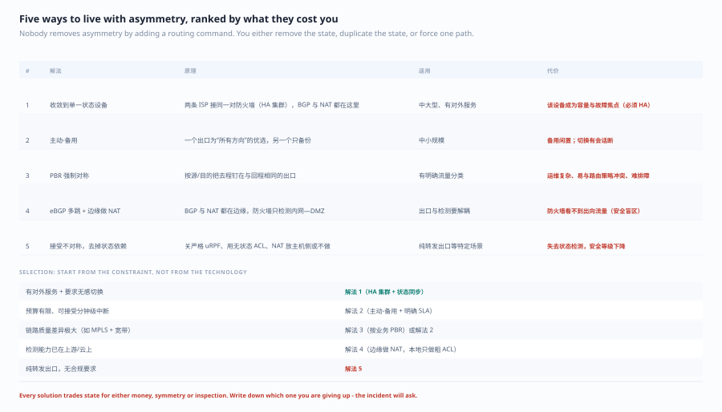
| # | Solution | Principle | Where it fits | Cost |
|---|---|---|---|---|
| 1 | Converge on a single stateful device | Both ISPs connect to the same firewall pair (HA cluster); BGP and NAT live there | Medium-large, public services | That device becomes the capacity and failure focus (HA mandatory) |
| 2 | Active-standby | One exit is preferred for all directions, the other only backs it up | Small-medium | The standby idles; sessions break on switchover |
| 3 | PBR to force symmetry | Pin outbound to the same exit as the return path by source/destination | Clear traffic classification | Operationally complex, conflicts with routing policy, hard to troubleshoot |
| 4 | eBGP multihop plus NAT on the edge router | BGP and NAT both on the edge; the firewall only inspects internal↔DMZ | You need "exit decoupled from inspection" | The firewall cannot see outbound traffic (a security blind spot) |
| 5 | Accept asymmetry, remove state dependencies | Disable strict uRPF, use stateless ACLs, NAT on the host or not at all | Specific cases (a pure transit exit) | You lose stateful inspection; security level drops |
| # | 解法 | 原理 | 适用 | 代价 |
|---|---|---|---|---|
| 1 | 收敛到单一状态设备 | 两条 ISP 都接同一对防火墙（HA 集群），BGP 与 NAT 都在此处 | 中大型、对外服务 | 该设备成为容量与故障焦点（必须 HA） |
| 2 | 主动-备用 | 一个出口为"所有方向"的优选，另一个只做备份 | 中小规模 | 备用链路闲置；切换有会话断 |
| 3 | PBR 强制对称 | 按源/目的把去程固定到与回程相同的出口 | 有明确流量分类 | 运维复杂、易与路由策略冲突、排障难 |
| 4 | eBGP 多跳 + 边缘路由器做 NAT | BGP 在边缘路由器，NAT 也在边缘；防火墙只做内网—DMZ 检测 | 需要"出口与检测解耦" | 防火墙看不到出向流量（安全盲区） |
| 5 | 接受不对称，禁用状态依赖 | 关闭 uRPF 严格模式、使用无状态 ACL、NAT 放在主机侧或不做 NAT | 特定场景（如纯转发出口） | 失去状态检测能力，安全等级下降 |
Selection table:
选型决策表：
| Your constraint | Recommended |
|---|---|
| Public services (inbound must be stable) + imperceptible failover required | Solution 1 (HA cluster + state sync) |
| Limited budget, minute-level interruption acceptable | Solution 2 (active-standby with an explicit SLA) |
| Very different link quality (e.g. MPLS + broadband) | Solution 3 (per-service PBR) or solution 2 |
| Security inspection provided upstream / in the cloud | Solution 4 (NAT on the edge, only coarse ACLs locally) |
| Pure transit exit, no compliance requirements | Solution 5 |
| 你的约束 | 推荐 |
|---|---|
| 有对外服务（入向必须稳定） + 要求无感切换 | 解法 1（HA 集群 + 状态同步） |
| 预算有限、可接受分钟级中断 | 解法 2（主动-备用 + 明确 SLA） |
| 两条链路质量差异大（如 MPLS + 宽带） | 解法 3（按业务 PBR）或解法 2 |
| 安全检测由上游/云侧提供 | 解法 4（边缘做 NAT，本地只做粗粒度 ACL） |
| 纯转发出口、无合规要求 | 解法 5 |
💡 Test: "the fewer stateful devices, the less damage asymmetry does." In design, first ask "on which devices does state live", then ask "are those devices seeing the same path".
💡 判据："状态设备的数量越少，非对称的伤害越小。" 设计时先问"状态在哪几台设备上"，再问"这些设备看到的是不是同一条路径"。
A Common Case That "Looks Symmetric but Is Not" · 一个常见的"看起来对称、实际不对称"场景
| Direction | What you think | Reality |
|---|---|---|
| Outbound | Goes out the primary exit | Goes out the primary exit ✅ |
| Return (same ISP) | Comes back the primary exit | Comes back the primary exit ✅ |
| Return (peer is multihomed) | Comes back the primary exit | The peer follows its own BGP decision and may return via the other ISP ❌ |
| 方向 | 你以为 | 实际 |
|---|---|---|
| 去程 | 走主出口 | 走主出口 ✅ |
| 回程（同一 ISP） | 走主出口 | 走主出口 ✅ |
| 回程（对端多宿主） | 走主出口 | 对端按它自己的 BGP 选路，可能从另一条 ISP 回来 ❌ |
⚠️ So "inbound is not controllable" turns directly into "asymmetry": your outbound policy cannot control the other side's return path. Any multihomed design that provides public services must assume the return path may arrive through any entry point, and place the stateful devices accordingly.
⚠️ 所以"入向不可控"会直接变成"非对称"：你的出向策略管不了对方的回程。凡是对外提供服务的多宿主设计，必须假设回程可能从任意入口进来，并据此决定状态设备的位置。
5. NAT and Addressing: the Edge's Session State · 五、NAT 与地址：边缘的会话状态
The Four Forms of NAT · NAT 的四种形态
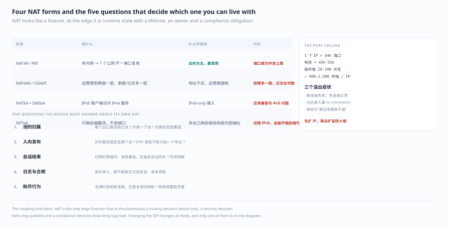
| Form | Description | Typical scenario | Key constraint |
|---|---|---|---|
| NAT44 | Private ↔ public, one-to-one / one-to-many | Ordinary enterprise exit | Session table capacity, logging |
| NAT444 / CGNAT | Subscriber-side NAT plus carrier-side NAT (100.64.0.0/10) | Carriers, very large scale | Port reuse ratio, traceability logs |
| NAT64 / DNS64 | IPv6-only clients reaching IPv4 | IPv6 transition | Requires DNS64; application compatibility |
| NPTv6 | IPv6 prefix translation (stateless) | Multihomed prefix translation | Does not solve the security problem of "stateless reachability" |
| 形态 | 描述 | 典型场景 | 关键约束 |
|---|---|---|---|
| NAT44 | 私网 ↔ 公网一对一/一对多 | 企业常规出口 | 会话表容量、日志 |
| NAT444 / CGNAT | 用户侧 NAT + 运营商侧 NAT（100.64.0.0/10） | 运营商、超大规模 | 端口复用比、溯源日志 |
| NAT64 / DNS64 | IPv6-only 客户端访问 IPv4 | IPv6 过渡 | 需 DNS64 配合、应用兼容性 |
| NPTv6 | IPv6 前缀转换（非状态） | 多宿主前缀转换 | 不解决"无状态可达"的安全问题 |
NAT's Coupling With Multihoming (Design Questions You Must Answer) · NAT 与多宿主的耦合（设计必答）
| Question | Wrong answer | Correct answer |
|---|---|---|
| Where does the NAT pool live? | "One pool, both sides use it" | One pool per ISP; the source address determines the return path |
| What happens to old sessions on failure? | "BGP will converge" | BGP convergence ≠ session recovery; either "clear + application reconnect" or "accept the timeout" |
| How are inbound services published? | "Port-forward into the internal network" | Static NAT to the DMZ, with policy explicit down to the port level |
| How long are logs retained? | "No requirement" | Per compliance (commonly six months or more), searchable by "public IP:port + time" |
| Are there enough ports? | "One public IP is enough" | Calculate the reuse ratio as "concurrent sessions / usable ports per IP (about 64k)" |
| 问题 | 错误答案 | 正确答案 |
|---|---|---|
| NAT 池放哪？ | "一个池，两边都用" | 每个 ISP 一个池，源地址决定回程 |
| 故障时旧会话怎么办？ | "BGP 会收敛" | BGP 收敛 ≠ 会话恢复；必须"清表 + 应用重连"或"接受超时" |
| 入向服务怎么发布？ | "端口映射到内网" | 静态 NAT 到 DMZ，策略显式到端口级 |
| 日志留多久？ | "没要求" | 按合规（常见 6 个月以上），且能按"公网 IP:端口 + 时间"反查 |
| 端口够不够？ | "一个公网 IP 足够" | 按"并发会话 / 每 IP 可用端口（约 6.4 万）"算复用比 |
Address Planning: One Decision, Ten Years of Impact · 地址规划：一次决策，十年影响
| Scenario | Recommendation | Rationale |
|---|---|---|
| Single-homed, no public services | PA is enough | Simple, no BGP needed |
| Multihomed / public services | PI (≥/24) | Changing provider needs no renumbering |
| IPv6 | PI /48 or PA /48, dual stack in parallel | With multiple prefixes, use a source-address selection policy |
| Branches | PA (provider-allocated) plus a central exit | Branch addresses are not assets |
| 场景 | 推荐 | 理由 |
|---|---|---|
| 单宿主、无对外服务 | PA 即可 | 简单、无需 BGP |
| 多宿主 / 有对外服务 | PI（≥/24） | 换运营商不重编号 |
| IPv6 | PI /48 或 PA /48，双栈并行 | 多前缀时用源地址选择策略 |
| 分支 | PA（运营商分配）+ 集中出口 | 分支地址不是资产 |
🎯 In one sentence: addresses are the one asset that is most expensive to change. The money saved on "PI or not" is repaid tenfold the first time you change provider.
🎯 一句话：地址是唯一"改起来最贵"的资产。 在"要不要 PI"上省下的钱，会在第一次换运营商时以十倍还回去。
6. Security and Availability · 六、安全与可用性
Three Ways to Publish Into the DMZ · DMZ 的三种发布方式
| Method | Structure | Advantages | Drawbacks |
|---|---|---|---|
| Direct DMZ (traditional) | A third firewall interface connects to the DMZ | Simple, intuitive policy | The firewall becomes the inbound bandwidth bottleneck |
| Reverse proxy in front | Internet → proxy/LB → internal service | Hides the backend; TLS offload and WAF possible | One more hop; requires session persistence |
| Cloud scrubbing + origin pull | Internet → CDN/scrubbing → origin | DDoS resistant, local points of presence | Vendor dependency; origin pulls need authentication |
| 方式 | 结构 | 优点 | 缺点 |
|---|---|---|---|
| 直连 DMZ（传统） | 防火墙第三个接口接 DMZ | 简单、策略直观 | 防火墙成为入向带宽瓶颈 |
| 反向代理前置 | Internet → Proxy/LB → 内网服务 | 隐藏后端、可做 TLS 卸载与 WAF | 多一跳、需会话保持 |
| 云清洗 + 回源 | Internet → CDN/清洗 → 源站 | 抗 DDoS、就近接入 | 依赖供应商、回源需认证 |
💡 The generic skeleton for public services: DNS (multi-location resolution) → CDN/WAF (absorb traffic) → DMZ reverse proxy → application. Every layer can degrade independently.
💡 对外服务的通用骨架：DNS（多地点解析）→ CDN/WAF（吸收流量）→ DMZ 反代 → 应用。每一层都能独立降级。
Layered DDoS Defence (by Where You Sit) · DDoS 分层防御（按"你的位置"分）
| Layer | Mechanism | Who does it | Note |
|---|---|---|---|
| Upstream | Traffic scrubbing, RTBH, Flowspec | ISP / scrubbing centre | The only place that can handle "links saturated" |
| Boundary | Connection limits, SYN cookies, uRPF, ACLs | Edge router / firewall | Only blocks attacks that already reached the device |
| Application | Rate limiting, challenge-response, behaviour analytics | WAF / CDN | Handles CC and slow attacks |
| Architecture | Anycast, multi-active, elastic bandwidth | Design layer | Makes attacks "spread out and survivable" |
| 层 | 手段 | 谁来做 | 备注 |
|---|---|---|---|
| 上游 | 流量清洗、RTBH、Flowspec | ISP / 清洗中心 | 唯一能应对"打满链路"的位置 |
| 边界 | 连接限制、SYN cookie、uRPF、ACL | 边缘路由器 / 防火墙 | 只能挡住到达设备之后的攻击 |
| 应用 | 速率限制、挑战应答、行为分析 | WAF / CDN | 应对 CC 与慢速攻击 |
| 架构 | anycast、多活、弹性带宽 | 设计层 | 让攻击"分散、可承受" |
The key design points of RTBH (many people configure the trigger and forget the recovery):
RTBH 的关键设计（很多人只配了"触发"，没配"回注"）：
! Trigger: point the attacked prefix's next hop at the black hole
ip route 203.0.113.0 255.255.255.0 Null0
! Announce: send the black-hole community to the upstream
set community 65535:666
! 触发：把被攻击前缀的下一跳指到黑洞
ip route 203.0.113.0 255.255.255.0 Null0
! 宣告：带黑洞 community 给上游
set community 65535:666
| Design point | Explanation |
|---|---|
| Trigger condition | Traffic threshold plus human confirmation (avoid self-inflicted damage) |
| Granularity | Prefer "the service IP" over "the whole prefix" to minimise impact |
| Recovery | Withdraw after the attack, with an automatic expiry mechanism |
| Drills | A quarterly "assume we are saturated" drill that measures switchover time |
| 设计点 | 说明 |
|---|---|
| 触发条件 | 流量阈值 + 人工确认（避免误伤） |
| 粒度 | 优先按"服务 IP"而不是"整个前缀"，减少影响面 |
| 恢复 | 攻击结束后撤销，且要有"自动过期"机制 |
| 演练 | 每季度做一次"假设被打满"的演练，测切换时间 |
Strict vs Loose uRPF · uRPF 的严格 vs 松散
| Mode | Behaviour | Where it fits |
|---|---|---|
| Strict | The source must be routable back out the ingress interface | Single-homed, symmetric environments |
| Loose | The source merely has to exist in the routing table | Multihoming (strongly recommended) |
| Feasible | Based on reachability via any path | Complex multihoming |
| 模式 | 行为 | 适用 |
|---|---|---|
| Strict | 源地址必须能通过入接口路由回 | 单宿主、对称环境 |
| Loose | 源地址在路由表中存在即可 | 多宿主（强烈推荐） |
| Feasible | 基于可达性（带可选路径） | 复杂多宿主 |
⚠️ Enabling strict uRPF in a multihomed environment is asking for trouble: return traffic arriving via any other entry point gets dropped.
⚠️ 多宿主环境里开 strict uRPF 是自找麻烦：回程从任一入口进来都可能被丢。
Remote Access: Choosing Between Three Forms · 远程接入：三种形态的取舍
| Form | Description | Where it fits | Cost |
|---|---|---|---|
| Centralised VPN headend | All traffic backhauls to HQ (full tunnel) | Strong compliance, centralised audit | High bandwidth and latency cost |
| Split tunnel | Only internal traffic goes over the VPN | Ordinary office work | Endpoints reach the internet directly, so policy is hard to unify |
| ZTNA / SASE | Per-application authorisation, local points of presence | Mobile workforce, many branches | Vendor dependency; identity systems must be reworked |
| 形态 | 描述 | 适用 | 代价 |
|---|---|---|---|
| 集中 VPN 头端 | 全部流量回总部（全隧道） | 强合规、集中审计 | 带宽与延迟成本高 |
| Split tunnel | 只有内网流量走 VPN | 常规办公 | 终端直连互联网，策略难统一 |
| ZTNA / SASE | 按应用授权、就近接入 | 移动办公、多分支 | 依赖供应商、需改造身份体系 |
Headend capacity calculation example:
头端容量计算示例：
Concurrent tunnels 3,000 x 2 Mbps each = 6 Gbps (peak)
Measured throughput with encryption = datasheet x 0.4 -> need a datasheet rating >= 15 Gbps
Then N-1 redundancy -> two headends at 15 Gbps each, or three at 10 Gbps each
并发隧道 3,000 × 人均 2 Mbps = 6 Gbps（峰值）
加密后实测吞吐 = 标称 × 0.4 → 需标称 ≥ 15 Gbps
再按 N−1 冗余 → 双头端各 15 Gbps，或 3 台各 10 Gbps
DIA vs a Centralised Internet Exit · DIA 与集中式互联网出口
| Model | Traffic path | Advantages | Drawbacks |
|---|---|---|---|
| Centralised exit | Branch → HQ → internet | Unified policy, centralised audit, security devices reused | Hairpinning, poor SaaS experience, expensive HQ bandwidth |
| Local DIA | Branch → local ISP → internet | Low latency, cheap bandwidth | Security policy scattered, larger exposure |
| Hybrid (recommended) | Critical business via the centre, SaaS/office via DIA + cloud security | Balances experience and compliance | Requires application identification and steering policy |
| 模式 | 流量路径 | 优点 | 缺点 |
|---|---|---|---|
| 集中出口 | 分支 → 总部 → Internet | 策略统一、审计集中、可复用安全设备 | 回程绕行、SaaS 体验差、总部带宽贵 |
| 本地 DIA | 分支 → 本地 ISP → Internet | 时延低、带宽便宜 | 安全策略分散、暴露面增加 |
| 混合（推荐） | 关键业务走集中，SaaS/办公走 DIA + 云安全 | 兼顾体验与合规 | 需应用识别与分流策略 |
🎯 Test: steer by "where the traffic is going", not by "which site it comes from". SaaS traffic leaving locally and internal traffic going back to HQ is the correct split.
🎯 判据：按"流量目的地"分流，不按"站点"分流。 去 SaaS 的流量本地出、回内网的流量回总部，才是正确的切法。
Three Ways to Connect to the Cloud (On-Ramp) · 云 on-ramp 的三种连接
| Method | Bandwidth / quality | Cost | Where it fits |
|---|---|---|---|
| Internet IPsec | Medium (affected by the internet) | Low | Small-medium, non-critical |
| Dedicated interconnect (DX / ExpressRoute) | High (SLA) | High | Core business, hybrid cloud |
| SD-WAN multi-cloud gateway | Medium-high (multipath steering) | Medium | Many branches, cloud-first |
| 方式 | 带宽/质量 | 成本 | 适用 |
|---|---|---|---|
| 公网 IPsec | 中（受互联网影响） | 低 | 中小规模、非关键 |
| 专线互联（DX / ExpressRoute） | 高（SLA） | 高 | 核心业务、混合云 |
| SD-WAN 多云网关 | 中高（多路径选路） | 中 | 多分支机构、云优先 |
7. Capacity and Scalability Models (Extended in These Notes) · 七、容量与可扩展性模型（本笔记延伸）
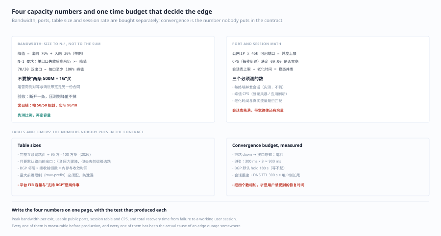
The edge has four kinds of "table", and every one of them runs out before bandwidth does.
边缘的容量有四种"表"，每一种都会先于带宽耗尽：
1. Exit Bandwidth and N−1 · 出口带宽与 N−1
Normal: ISP-A carries 70%, ISP-B carries 30%
Primary fails: ISP-B must now carry 100% -> if B only has 40% of the capacity -> congestion immediately
正常：ISP-A 承载 70%，ISP-B 承载 30%
主用失效：ISP-B 需承接 100% → 若 B 只有 40% 容量 → 立刻拥塞
| Item | Calculation | Note |
|---|---|---|
| N−1 bandwidth | Single-exit capacity ≥ network-wide peak | Otherwise "redundancy" becomes "degradation" at the moment of switchover |
| Committed rate (CIR) | Aligned with the contract | Do not mistake a measured burst peak for a commitment |
| Oversubscription | Internal-to-exit ratio | Branch and HQ ratios usually differ greatly |
| 项 | 计算 | 备注 |
|---|---|---|
| N−1 带宽 | 单出口容量 ≥ 全网峰值 | 否则"冗余"在切换瞬间变成"降级" |
| 出口承诺速率（CIR） | 与运营商合同对齐 | 别把"峰值突发的实测值"当承诺 |
| 收敛比 | 内网到出口的收敛比 | 分支与总部的收敛比通常差异很大 |
2. NAT Sessions and Ports · NAT 会话与端口
| Item | Estimate | Explanation |
|---|---|---|
| Concurrent sessions | Online endpoints × concurrency per endpoint (commonly 20–100) | Real browser and office-software values are much higher than intuition |
| Usable ports per public IP | About 64,000 (per protocol) | TCP and UDP are counted separately |
| Reuse ratio | Concurrent sessions / port count | Above 1 means more public IPs or CGNAT |
| Session ageing | TCP long-lived connections, UDP timeouts | Too short → SaaS reconnects frequently |
| 项 | 估算 | 说明 |
|---|---|---|
| 并发会话 | 在线终端 × 每终端并发（常见 20–100） | 浏览器/办公软件的实际值远高于直觉 |
| 每公网 IP 可用端口 | 约 64,000（每协议） | TCP + UDP 分别计算 |
| 复用比 | 并发会话 / 端口数 | 超过 1 就要多个公网 IP 或 CGNAT |
| 会话老化 | TCP 长连接、UDP 超时 | 老化过短 → SaaS 频繁重连 |
3. BGP and the Forwarding Table · BGP 与转发表
| Item | Estimate | Explanation |
|---|---|---|
| Global IPv4 routes | About 950k–1M (still growing) | Needs sufficient FIB/TCAM, otherwise traffic goes through software forwarding |
| Is the full table needed | Default route vs full table | A default route is more stable: the full table brings convergence churn and hardware requirements |
| Prefix change rate | Tens to hundreds per second | Use bgp dampening with care (it prolongs outages) |
| 项 | 估算 | 说明 |
|---|---|---|
| 全球 IPv4 路由 | 约 95 万–100 万条（持续增长） | 需要足够 FIB/TCAM，否则走软件转发 |
| 需不需要全表 | 默认路由 vs 全表 | 默认路由更稳：全表会带来收敛波动与硬件要求 |
| 前缀变化速率 | 每秒数十到数百条 | 需 bgp dampening 需谨慎（会延长故障） |
💡 Rule of thumb: 90% of enterprise edge scenarios do not need the global table. You need it only for fine-grained destination-based path selection, multi-exit splitting or black-hole diversion — and then size the hardware for "full table + 20% growth".
💡 一条经验：企业边缘 90% 的场景不需要全球全表。 只有做"按目的地精细选路 / 多出口分流 / 黑洞牵引"时才需要，并且要按"全表 + 增长 20%"选硬件。
4. Stateful Device Performance · 状态设备性能
| Metric | Why it matters | Typical trap |
|---|---|---|
| New session rate (CPS) | Decides whether SYN floods and the morning peak are survivable | Looking only at throughput, not CPS |
| Concurrent sessions | Native/firewall table capacity | Ignoring long-lived connections and video conferencing |
| Encrypted throughput | VPN headend sizing | Sizing with the published figure (usually without encryption) |
| Log throughput | Compliance and traceability | Logs fill the disk and get dropped |
| 指标 | 为什么重要 | 典型陷阱 |
|---|---|---|
| 新建会话速率（CPS） | 决定能否扛住 SYN 型攻击与早高峰 | 只看吞吐不看 CPS |
| 并发会话数 | 决定 NAT/防火墙表容量 | 忽视长连接与视频会议 |
| 加密吞吐 | VPN 头端选型 | 用标称值（通常无加密）做容量 |
| 日志吞吐 | 合规与溯源 | 日志写满磁盘导致丢日志 |
Convergence Budget (Numbers to Put in the Design Document) · 收敛预算（写进设计文档的数字）
| Stage | Typical value | Can be optimised to |
|---|---|---|
| Link-down detection | Milliseconds (hardware) | — |
| BGP hold time | 180 s default (keepalive 60 s) | Sub-second with BFD / tuned holdtime |
| IGP convergence | <1 s (with tuning) | — |
| NAT/firewall session rebuild | Depends on the application | Applications that can retry + active table clearing |
| DNS cache | TTL (commonly 300 s) | Pre-lower the TTL before planned changes |
| Application retry | Not under your control | Client timeouts and retry strategy |
| 环节 | 典型值 | 可优化到 |
|---|---|---|
| 链路 down 检测 | 毫秒级（硬件） | — |
| BGP 保持时间 | 默认 180 s（keepalive 60 s） | BFD 亚秒级 / 调 holdtime |
| IGP 收敛 | <1 s（收敛调优） | — |
| NAT/防火墙会话重建 | 取决于应用 | 应用可重试 + 主动清表 |
| DNS 缓存 | TTL（常见 300 s） | 故障切换时预降 TTL |
| 应用重试 | 不可控 | 客户端超时与重试策略 |
🎯 How to write the target: do not write "high availability". Write "after an exit failure: new sessions use the backup exit within 5 s, existing sessions are interrupted, and applications reconnect automatically within 30 s". Only what can be verified counts as design.
🎯 目标写法：不要写"高可用"，写"出口故障后：新会话 5 s 内走备用出口，存量会话中断，应用 30 s 内自动重连"。能被验证的才算设计。
8. From Design to Delivery: the Nine Tables This Chapter Must Produce · 八、从设计到交付：本章必须的 9 张表
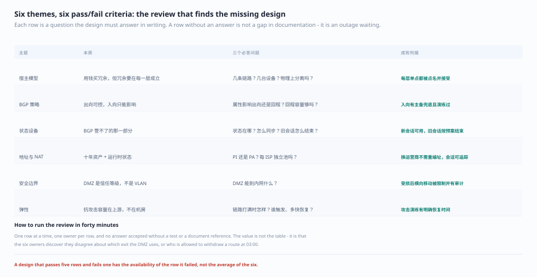
| # | Table | Content | Who uses it |
|---|---|---|---|
| 1 | Exit requirements table | Service / direction (out/in) / bandwidth / latency / compliance | Design and procurement |
| 2 | Trust levels and policy matrix | Internet / DMZ / internal / management, all four against each other | Security review |
| 3 | Multihoming scenario table | Links / ISPs / devices / address type / AS | Architecture review |
| 4 | Prefixes and announcements table | PI/PA prefixes, AS, upstreams, filter policy | Operations and ISP liaison |
| 5 | Attribute policy table | Prefix → LP / prepend / MED / community | Operations |
| 6 | NAT table | Pool / exit / address count / port reuse / logging | Operations and audit |
| 7 | Stateful devices and session rebuild table | Device / state type / sync method / rebuild policy | Failure drills |
| 8 | Capacity table | Bandwidth / CPS / sessions / FIB / encrypted throughput | Platform selection |
| 9 | Acceptance case table | Cable pull / power loss / ISP failure / attack / prefix loss | Acceptance |
| # | 表 | 内容 | 谁用 |
|---|---|---|---|
| 1 | 出口需求表 | 业务 / 方向（出/入）/ 带宽 / 时延 / 合规 | 设计与采购 |
| 2 | 信任等级与策略矩阵 | 互联网 / DMZ / 内部 / 管理 四区互访 | 安全评审 |
| 3 | 多宿主场景表 | 链路数 / ISP 数 / 设备数 / 地址类型 / AS | 架构评审 |
| 4 | 前缀与宣告表 | PI/PA 前缀、AS、上游、过滤策略 | 运维与运营商对接 |
| 5 | 属性策略表 | 前缀 → LP / prepend / MED / community | 运维 |
| 6 | NAT 表 | 池 / 出口 / 地址数 / 端口复用 / 日志 | 运维与审计 |
| 7 | 状态设备与会话重建表 | 设备 / 状态类型 / 同步方式 / 重建策略 | 故障演练 |
| 8 | 容量表 | 带宽 / CPS / 会话 / FIB / 加密吞吐 | 选型 |
| 9 | 验收用例表 | 拔线 / 断电 / 运营商故障 / 攻击 / 前缀丢失 | 验收 |
Real-World Case Studies (12 Scenarios) · 实战案例（12 个真实场景）
🔥 Case 1: Two ISPs, Both Fibres Into the Same Firewall — "You Only Learn It Was a Single Point When It Breaks" · 🔥 案例一：双 ISP 但两条线进同一台防火墙，"断一次才知道是单点"
Symptom: the company advertises "dual carrier, zero interruption". A municipal construction project cuts a main duct and both carriers go down for six hours.
现象：公司宣传"双运营商、零中断"。某次市政施工挖断主干，两家同时中断 6 小时。
Investigation: both carriers' entrance fibres run through the same duct (two contracts, one physical path); and both links plug into the same firewall.
排查：两家运营商的进楼光缆走同一段管道（合同上是两家，物理上是一条路径）；且两条线都插在同一台防火墙上。
Root cause: redundancy was delivered at the "contract layer", not at the "physical and device layer".
根因：冗余只做到"合同层"，没有做到"物理层与设备层"。
What should have been done: - Require written proof of physical route separation from the carriers, or choose access points in different directions - Dual firewalls + dual edge routers, in different racks on different power feeds - Write a "single-point inventory" into the design document: fibre, duct, PoP, rack, power, devices, NAT pools
正确做法： - 要求运营商提供物理路由分离证明，或选择走不同方向的接入点 - 双防火墙 + 双边缘路由器，且分布在不同机柜、不同供电路由 - 把"单点清单"写进设计文档：光缆、管道、PoP、机柜、电源、设备、NAT 池
🔥 Case 2: Dual Exits and Dual Firewalls, Yet Inbound Access "Works Intermittently" · 🔥 案例二：双出口 + 双防火墙，入向访问"时通时不通"
Symptom: the public website fails from some regions and sometimes succeeds on retry. A capture shows the server only receiving half of the SYN exchanges.
现象：对外网站从某些地区访问失败，重试有时成功；抓包显示服务端只收到 SYN 的一半。
Investigation: outbound traffic follows local preference through firewall A, while the return path arrives through firewall B. The two firewalls have no session synchronisation, so B has no session and drops the packets.
排查：出向流量按 local preference 走 A 防火墙，回程从 B 防火墙进来；两台防火墙没有会话同步，B 上无会话 → 丢弃。
Root cause: inbound is uncontrollable, and the state is not synchronised (truth 6 in this chapter).
根因：入向不可控 + 状态不同步（本章第 6 条）。
What should have been done: - Connect both ISPs to the same HA firewall pair (solution 1), or - Switch to active-standby (solution 2) and put "sessions break on switchover" into the SLA - If active/active is mandatory, use a platform with cluster state sync and verify its behaviour on asymmetric paths
正确做法： - 两条 ISP 都接入同一对 HA 防火墙（解法 1），或 - 改为主动-备用（解法 2），并把"切换时的会话中断"写进 SLA - 若必须双活：使用支持集群状态同步的平台，并验证"非对称路径"下的行为
🔥 Case 3: eBGP Across the Firewall With Multihop — the Neighbour Stays Active · 🔥 案例三：eBGP 跨防火墙多跳，邻居一直 Active
Symptom: the edge router is configured with ebgp-multihop 3 towards the ISP, but the neighbour stays in Active state.
现象：边缘路由器与 ISP 建立 eBGP，配置了 ebgp-multihop 3，但邻居始终 Active。
Investigation: the firewall only permits outbound TCP 179 and does not permit inbound; and the device has ttl-security enabled at the same time, which conflicts with multihop.
排查：防火墙只放行了出向 TCP 179，未放行入向；且设备上同时启用了 ttl-security（与 multihop 冲突）。
Root cause: the holes needed for routing protocols were not opened as a group, and two features are mutually exclusive.
根因："路由协议需要的洞"没有成组放行，且两个特性互斥。
What should have been done:
- Open the firewall policy as a group: TCP 179 both directions, BFD UDP, ICMP types 3/4
- Choose either ttl-security or ebgp-multihop (GTSM suits directly connected peers)
- Use show ip bgp neighbors ("last reset") plus a capture to determine "never arrived" versus "rejected"
正确做法：
- 防火墙策略成组放行：TCP 179 双向、BFD UDP、ICMP type 3/4
- ttl-security 与 ebgp-multihop 二选一（GTSM 适用于直连对等）
- 用 show ip bgp neighbors 的"last reset"与抓包定位是"没到"还是"被拒"
🔥 Case 4: Outbound local preference Configured, Inbound Ignored — the Return Path Congests · 🔥 案例四：做了出向 local preference，入向完全没管，回程拥塞
Symptom: the primary exit shows 20% uplink and 100% downlink; the backup exit shows 80% uplink and 5% downlink.
现象：主出口上行利用率 20%，下行 100%；备用出口上行 80%、下行 5%。
Investigation: only outbound policy (LP) exists; no prepending is done for inbound, so peers (including the ISP) send most return traffic to the primary exit according to their own path selection.
排查：只有出向策略（LP），入向未做任何 prepending；对端（含 ISP）按自己的选路把回程大多送主出口。
Root cause: mistaking "outbound is controllable" for "both directions are controllable".
根因：把"出向可控"当成"双向可控"。
What should have been done: - Apply AS-path prepending towards the backup exit's upstream (and verify it takes effect) - Size downlink capacity on both exits for "may carry 100%" (because inbound is only "influenced") - Monitor the actual inbound path with external multi-location probes instead of watching local interface utilisation
正确做法： - 对备用出口的上游做 AS-path prepending（并验证生效） - 双出口下行容量都按"可能承载 100%"设计（因为入向只是"影响"） - 用外部多地点探测监控"入向实际路径"，而不是只看本端接口利用率
🔥 Case 5: Trying to Steer Across ISPs With MED — Nothing Responds · 🔥 案例五：用 MED 想跨 ISP 选路，怎么调都没反应
Symptom: the customer wants "in via ISP-A, out via ISP-B". MED 50 is set on the A side and 100 on the B side, with no effect.
现象：客户希望"从 ISP-A 进、从 ISP-B 出"，在 A 侧设 MED 50、B 侧设 100，实际无变化。
Investigation: MED is compared only among paths from the same neighbour AS. The two paths come from different ASes, so MED does not participate in the decision at all.
排查：MED 只在同一邻居 AS 的路径间比较；两条路径来自不同 AS，MED 不参与决策。
Root cause: the attribute semantics were applied in the wrong direction.
根因：属性语义用错方向。
What should have been done: - Across ISPs, only prepending / community / active-standby can help - Use MED only for multiple entry points into the same ISP, set consistently on both sides - Make "the scope of each attribute" a table and put it into the change template
正确做法： - 跨 ISP 只能用 prepending / community / 主动-备用 - 同 ISP 多入口才用 MED，并在两侧一致设置 - 把"属性作用范围"做成一张表，写进变更模板
🔥 Case 6: The NAT Pool Is Bound to the Primary ISP — Every Session "Freezes" After the Link Fails · 🔥 案例六：NAT 池绑定主 ISP，主链路故障后所有会话"冻结"
Symptom: when the primary link fails, BGP switches to the backup within 10 seconds and new connections work, but every in-flight download and conference call hangs until recovering 5–15 minutes later.
现象：主链路故障后，BGP 10 秒内切到备用，新连接正常，但所有正在进行的下载/会议全部卡死，直到 5–15 分钟后才恢复。
Investigation: the NAT pool contains only the primary ISP's addresses. Old sessions' translation entries still point at an unreachable public address, so return traffic cannot arrive.
排查：NAT 池只有主 ISP 地址；旧会话的翻译表仍指向已不可达的公网地址，回程无法到达。
Root cause: NAT sessions are state, and BGP convergence cannot touch them (truths 3 and 7 in this chapter).
根因：NAT 会话是状态，BGP 收敛管不到它（本章第 3、7 条）。
What should have been done:
- One NAT pool per ISP; on failure run clear ip nat translation for the old pool
- Require applications to be able to retry; write "existing sessions are interrupted, new sessions recover within 5 s" into the SLA
- For long-lived sessions (video conferencing), consider dual stack / multipath or application-level multi-active
正确做法：
- 每 ISP 一个 NAT 池；故障时对旧池执行 clear ip nat translation
- 应用层要求可重试；SLA 写"存量会话中断，新会话 5 s 内恢复"
- 长连接业务（视频会议）考虑"双栈/多路径"或应用层多活
🔥 Case 7: Default Route Plus Floating Static — An ISP-Side Failure Blacked Out 40 Minutes · 🔥 案例七：默认路由 + 浮动静态，运营商侧故障黑了 40 分钟
Symptom: the primary link's interface is up, optical power is normal, the next hop pings fine, yet every user times out towards the internet. The carrier repairs it 40 minutes later.
现象：主链路接口 up、光功率正常、Ping 下一跳也通，但用户访问外网全部超时；40 分钟后运营商修复。
Investigation: a MAN failure on the ISP-A side, but "the CE–PE segment" is still reachable. The static default route cannot detect it, and the floating default does not take effect.
排查：ISP-A 侧城域网故障，但"CE—PE 这一段"仍然可达；静态默认路由无法感知，浮动默认不生效。
Root cause: "link up" and "path usable" are two different things (truth 10 in this chapter).
根因："链路 up" 与 "路径可用" 是两件事（本章第 10 条）。
What should have been done:
- Use IP SLA probes against end-to-end targets (several: public DNS, critical SaaS, the peer ISP's gateway) with track on the default route
- Or run BGP with the carrier and let prefix withdrawal express unreachability
- Use at least two probe targets in different address families / carriers, so that a probe target failing does not cause a false switchover
正确做法： - 用 IP SLA 探测端到端目标（多个：公网 DNS、关键 SaaS、对端 ISP 网关），track 到默认路由 - 或与运营商跑 BGP，让"前缀撤销"来表达不可达 - 探测目标至少 2 个、不同地址族/运营商，避免"目标本身故障"引起误切
🔥 Case 8: Changing ISP, Renumbering the Whole Company, Project Delayed Four Months · 🔥 案例八：换运营商，全公司重编号，项目延期 4 个月
Symptom: switching from carrier A to carrier B for pricing reasons (PA addresses were used). DNS, firewall allow lists, partner ACLs, VPNs, monitoring and printer firmware all have to change.
现象：因资费原因从 A 运营商换到 B，用了 PA 地址；结果 DNS、防火墙白名单、合作伙伴 ACL、VPN、监控、打印机固件全部要改。
Investigation: the addresses are PA, there is no AS of our own and no PI prefix; changing ISP means changing identity.
排查：地址是 PA，无自有 AS，无 PI 前缀；换运营商等于换身份。
Root cause: the address-asset decision was never made (truth 11 in this chapter).
根因：地址资产决策缺失（本章第 11 条）。
What should have been done: - Multihoming or public services require PI (≥/24) plus a public AS - Apply to the RIR a year in advance; run both prefixes in parallel during the transition - Put the "address inventory" into asset management, annotated with "who uses it, how long a change takes"
正确做法： - 多宿主/对外服务必须用 PI（≥/24）+ 自有公网 AS - 提前一年向 RIR 申请；过渡期双前缀并存 - 把"地址清单"纳入资产管理，标注"谁在用、改它要多久"
🔥 Case 9: One Redistribution Mistake Leaked Internal Prefixes to the Internet · 🔥 案例九：一次重分发失误，把内网前缀泄漏到公网
Symptom: the upstream carrier calls to say "you are announcing 10.0.0.0/8"; some branch offices report connectivity problems.
现象：上游运营商电话通知"你宣告了 10.0.0.0/8"；部分分支机构访问异常。
Investigation: the edge router redistributes the IGP into BGP, there is no outbound prefix filter, and a network statement is missing its mask.
排查：边缘路由器把 IGP 重分发进 BGP，出向没有前缀过滤；network 语句漏配 mask。
Root cause: the baseline "announce only prefixes I own" was missing.
根因：没有"只宣告我拥有的前缀"这一条基线。
What should have been done:
- Permit only PI prefixes outbound (prefix-list with exact mask matching)
- Forbid automatic IGP→BGP redistribution; require explicit network statements or a route-map allow list
- Enable maximum-prefix plus change alerts; trend-monitor the number of announced prefixes
正确做法：
- 出向只允许 PI 前缀（prefix-list 精确匹配，含掩码）
- 禁止 IGP→BGP 的自动重分发；必须逐条 network 或 route-map 白名单
- 开启 maximum-prefix 与变更告警；对"宣告前缀数"做趋势监控
🔥 Case 10: The DMZ Shares the Internal Policy — One Web Server Owned Leads to the Database · 🔥 案例十：DMZ 与内网同策略，一台 Web 服务器被拿下后横向到数据库
Symptom: a public web server is exploited to get a shell, and within four hours the attacker reaches 12 internal hosts.
现象：对外 Web 被利用漏洞获取 shell，攻击者 4 小时内访问了内网 12 台主机。
Investigation: the DMZ and the internal network share one set of loose "any-any" policies on the eastbound segment, and DMZ hosts can reach the database directly on 1433/3306.
排查：DMZ 与内网共用一组"宽松放通"策略（any-any 在东向段），且 DMZ 主机可直连数据库 1433/3306。
Root cause: the DMZ has a "location" but no "trust level" and no "unique path" (truth 9 in this chapter).
根因：DMZ 只有"位置"，没有"信任等级"与"唯一路径"（本章第 9 条）。
What should have been done: - DMZ → internal permits only "application server → database" on specific ports, with connection-count and time-window limits - Micro-segment inside the DMZ; no free east-west communication - Outbound only via a proxy; alert on anomalous outbound connections (callbacks) - Run regular "assume compromised" lateral-movement drills
正确做法： - DMZ → 内网只允许"应用服务器 → 数据库"的具体端口，且带连接数/时间窗限制 - DMZ 内部微分段，禁止东西向自由通信 - 出向仅经代理；对"异常出向连接"告警（回连信号） - 定期做"假设已失陷"的横向移动演练
🔥 Case 11: DDoS Saturates the Exit and the Local Firewall "Does Nothing" · 🔥 案例十一：DDoS 打满出口，本地防火墙"毫无作用"
Symptom: a service is hit by a 40 Gbps reflected UDP attack and the exit link is saturated; the firewall sits at 30% CPU with no log entries, because the packets never arrive.
现象：业务被 40 Gbps UDP 反射攻击，出口链路饱和；防火墙 CPU 30%、日志无异常，因为包根本到不了。
Investigation: no upstream scrubbing contract, no RTBH runbook, no anycast.
排查：无上游清洗合同、无 RTBH 预案、无 anycast。
Root cause: mistaking "device capability" for "attack resistance" (truth 12 in this chapter).
根因：把"设备能力"当成"抗攻击能力"（本章第 12 条）。
What should have been done: - Contract scrubbing with the ISP and pre-configure RTBH communities and Flowspec - Put a CDN/WAF in front of critical public services (absorbs both volumetric and application attacks) - Build a "trigger — divert — inject back — recover" runbook and time the drills - Close your own open resolvers and apply BCP38 filtering at the exit
正确做法： - 与 ISP 签订清洗服务，预先配置 RTBH community 与 Flowspec - 关键对外服务前置 CDN/WAF（吸收流量型与应用型攻击） - 建立"触发—牵引—回注—恢复"的 runbook，并演练计时 - 关闭自身开放解析服务，出口做 BCP38 过滤
🔥 Case 12: A Single VPN Headend With a Full Session Table — the Whole Company's Remote Work Collapses · 🔥 案例十二：VPN 头端单机 + 会话表满，全员远程办公瘫痪
Symptom: everyone suddenly works from home; VPN logins queue and connected users drop repeatedly. Device CPU 95%, log shows "session limit reached".
现象：突发全员居家，VPN 登录排队、已连接用户频繁掉线；设备 CPU 95%，日志"session limit reached"。
Investigation: one headend rated at 5 Gbps (unencrypted), delivering about 1.8 Gbps with encryption; the concurrent tunnel limit is 2,000 against a real requirement of 4,500.
排查：单台头端、标称 5 Gbps（未开加密），实际加密吞吐约 1.8 Gbps；并发隧道上限 2,000，实际需求 4,500。
Root cause: capacity planned from datasheet figures rather than measured ones, and the headend is a single point (truth 14 in this chapter).
根因：容量按标称值而非实测值规划，且头端是单点（本章第 14 条）。
What should have been done: - Size against measured encrypted throughput and "peak tunnels × 2"; dual headends plus external LB/GSLB - Configure multiple entry points in the client profile; use split tunnelling to cut backhaul pressure - Load-test concurrency before go-live and put "maximum concurrent online" into the operations manual - Long term: evolve towards ZTNA/SASE, authorising per application rather than tunnelling everything
正确做法： - 按"加密后实测吞吐"与"峰值隧道 × 2"选型，双头端 + 外部 LB/GSLB - 客户端配置多入口；分流（split tunnel）降低回传压力 - 上线前做并发压测，把"最大同时在线"写进运维手册 - 长期方案：向 ZTNA/SASE 演进，按应用授权而非全隧道
Design Trade-offs · 设计取舍
| Trade-off | Choose A and you get | Choose B and you get | How CCDE decides |
|---|---|---|---|
| A: single-homed / B: multihomed | Low cost, simplicity | Redundancy, controllable path selection | Is the cost of an outage greater than the cost of bandwidth |
| A: single router multihomed / B: dual routers | Fewer devices, less configuration | Device-level redundancy | Can you accept "one device decides the enterprise's exit" |
| A: active-standby / B: load sharing | Simple sessions, clear switchover | High bandwidth utilisation | Since inbound cannot be controlled, is B's state cost affordable |
| A: PA addresses / B: PI addresses | No application, carrier handles it | Changing ISP needs no renumbering | Are there inbound services or multiple ISPs |
| A: private AS / B: public AS | No application | Safe with multiple ISPs, no dependence on remove-private-as |
Multiple ISPs almost always forces B |
| A: static default / B: BGP | Simple | Real reachability, controllable inbound | Do you need "switch even on ISP-side failure" |
| A: centralised exit / B: DIA | Unified policy, centralised audit | Low latency, cheap bandwidth | Split by traffic destination, not by site |
| A: full-tunnel VPN / B: split tunnel | Strong audit | Good experience, less headend load | Compliance vs experience; they can combine (critical traffic tunnelled) |
| A: self-built VPN headend / B: ZTNA/SASE | Full control | Elastic, local PoPs, light operations | Share of mobile work and the security team's capability |
| A: local firewall for DDoS / B: upstream scrubbing | No contract needed | The only thing that works when links saturate | Any public service forces B |
| A: NAT on the edge router / B: NAT on the firewall | Fast forwarding, less state | Policy and state centralised | State must have exactly one owner |
| A: strict uRPF / B: loose uRPF | Strong spoofing protection | Tolerates multihomed asymmetry | Multihoming always means B |
| A: active/active firewall cluster / B: active-standby | Better capacity and switchover | Simple, predictable | State-sync capability and troubleshooting skill |
| A: dual stack in parallel / B: NAT64 transition | Best compatibility | Saves addresses, simpler operations | Application and endpoint IPv6 support |
| A: cloud scrubbing / B: self-built scrubbing | Elastic, on demand | Autonomous, no vendor lock-in | Attack scale and budget |
| A: keep IPv4 NAT / B: IPv6 only | Compatibility | End to end, simpler | Support in middleboxes and by partners |
| 取舍 | 选 A 得到 | 选 B 得到 | CCDE 判断依据 |
|---|---|---|---|
| A: 单宿主 / B: 多宿主 | 低成本、简单 | 冗余、可控选路 | 业务中断的损失是否大于带宽成本 |
| A: 单路由器多宿主 / B: 双路由器 | 省设备、少配置 | 设备级冗余 | 能否接受"一台设备决定全网出口" |
| A: 主动-备用 / B: 负载分担 | 会话简单、切换明确 | 带宽利用率高 | 入向不可控时，B 的状态代价是否可承受 |
| A: PA 地址 / B: PI 地址 | 免申请、运营商代办 | 换运营商不重编号 | 有入向服务或多 ISP 吗 |
| A: 私有 AS / B: 公网 AS | 免申请 | 多 ISP 安全、无 remove 依赖 | 是否多 ISP（多 ISP 几乎必须 B） |
| A: 静态默认 / B: BGP | 简单 | 真实可达性、入向可控 | 是否需要"运营商侧故障也能切" |
| A: 集中出口 / B: DIA | 策略统一、审计集中 | 时延低、带宽便宜 | 按"流量目的地"切，不按站点切 |
| A: 全隧道 VPN / B: Split tunnel | 强审计 | 体验好、头端压力小 | 合规 vs 体验；可组合（关键走隧道） |
| A: 自建 VPN 头端 / B: ZTNA/SASE | 自主可控 | 弹性、就近、运维轻 | 移动办公比例与安全团队能力 |
| A: 本地防火墙抗 DDoS / B: 上游清洗 | 无需合同 | 唯一能应对链路打满 | 有对外服务就必须 B |
| A: NAT 在边缘路由器 / B: NAT 在防火墙 | 转发快、状态少 | 策略与状态集中 | 状态只能有一个所有者 |
| A: 严格 uRPF / B: 松散 uRPF | 防伪造强 | 容忍多宿主不对称 | 多宿主一律 B |
| A: 双活防火墙集群 / B: 主备 | 容量与切换优 | 简单、可预期 | 状态同步能力与团队排障能力 |
| A: 双栈并行 / B: NAT64 过渡 | 兼容性最好 | 节省地址、简化运维 | 应用与终端对 IPv6 的支持度 |
| A: 云清洗 / B: 自建清洗 | 弹性、按需 | 自主、无供应商绑定 | 攻击规模与预算 |
| A: 保留 IPv4 NAT / B: 纯 IPv6 | 兼容 | 端到端、简化 | 中间设备与合作伙伴的支持度 |
💡 A universal criterion: "does this choice leave less state, or more, at failure time?" At the edge, less state is more reliable — state is precisely the part BGP cannot manage.
💡 一条通用判据："这个选择让故障时的状态更少，还是更多？" 边缘设计里，状态越少越可靠 —— 状态是"BGP 管不到"的那部分。
Design Pitfalls · 设计缺陷
| # | Pitfall | Consequence | Avoidance |
|---|---|---|---|
| 1 | Two ISPs on the same physical path | One construction project takes everything down | Written proof of physical route separation |
| 2 | Two ISPs into the same device | Device failure kills all connectivity | Dual devices, dual racks, dual power |
| 3 | One NAT pool across ISPs | Sessions freeze after switchover | Pool per ISP + table clearing policy |
| 4 | No iBGP / no next-hop-self |
Prefix black hole | iBGP full mesh or RR + NH-self |
| 5 | ttl-security and multihop both enabled |
The neighbour never comes up | Choose one |
| 6 | Firewall does not permit BFD | BFD silently inactive | Group the policy + monitor BFD state |
| 7 | Only outbound 179 permitted | Neighbour stuck in Active | Permit both directions + confirm with a capture |
| 8 | MED used across ISPs | Policy has no effect | Use prepending / community |
| 9 | Prepending applied on one side only | Inbound still wrong after switchover | Configure both primary and backup as a pair |
| 10 | No outbound prefix filter | Internal prefixes leaked | Prefix-list + no automatic redistribution |
| 11 | No maximum-prefix |
Memory exhaustion, session flapping | Set a limit per neighbour |
| 12 | Judging inbound by interface utilisation | Misreads traffic direction | External multi-location probes |
| 13 | Default route without health checking | 40-minute black hole | IP SLA + track, or BGP |
| 14 | Strict uRPF in a multihomed design | Random packet loss | Use loose/feasible mode |
| 15 | DMZ and internal on any-any | Lateral movement | Port-level allow lists + micro-segmentation |
| 16 | Public services without WAF/CDN | One attack and it collapses | Front with scrubbing and a WAF |
| 17 | No RTBH / scrubbing runbook | Chaos during an attack | Pre-configured communities + runbook |
| 18 | VPN sized on datasheet throughput | Saturates as soon as encryption is on | Measured encrypted throughput × N−1 |
| 19 | Dual stack but only IPv4 policy written | IPv6 exposed by default permit | Review dual-stack policy together |
| 20 | Claiming "active/active" without verification | Each device loses half its sessions in a real failure | Fault-injection cases + timing |
| # | 缺陷 | 后果 | 规避 |
|---|---|---|---|
| 1 | 双 ISP 同物理路径 | 一次施工全网断 | 物理路由分离证明 |
| 2 | 双 ISP 接同一台设备 | 设备故障全断 | 双设备、双机柜、双电源 |
| 3 | 单 NAT 池跨 ISP | 切换后会话冻结 | pool per ISP + 清表策略 |
| 4 | 无 iBGP / 无 next-hop-self |
前缀黑洞 | iBGP 全互联或 RR + NH-self |
| 5 | ttl-security 与 multihop 同开 |
邻居起不来 | 二选一 |
| 6 | 防火墙未放行 BFD | BFD 不生效且无告警 | 策略成组 + 监控 BFD 状态 |
| 7 | 只放出向 179 | 邻居 Active | 双向放行 + 抓包确认 |
| 8 | 用 MED 跨 ISP 选路 | 策略无效 | 改 prepending/community |
| 9 | prepending 只在单侧 | 切换后入向仍错 | 主备两侧成对配置 |
| 10 | 出向无前缀过滤 | 泄漏内网前缀 | prefix-list + 禁自动重分发 |
| 11 | 无 maximum-prefix |
内存耗尽、会话震荡 | 按邻居设上限 |
| 12 | 只看接口利用率判断入向 | 误判流量走向 | 外部多地点探测 |
| 13 | 默认路由无健康检查 | 黑洞 40 分钟 | IP SLA + track 或 BGP |
| 14 | 严格 uRPF 用在多宿主 | 随机丢包 | 改 loose/feasible |
| 15 | DMZ 与内网 any-any | 横向移动 | 端口级白名单 + 微分段 |
| 16 | 对外服务无 WAF/CDN | 一打就瘫 | 前置清洗与 WAF |
| 17 | 无 RTBH/清洗预案 | 攻击时手忙脚乱 | 预配 community + runbook |
| 18 | VPN 按标称吞吐选型 | 一开加密就满 | 按实测加密吞吐 × N−1 |
| 19 | 双栈只写 IPv4 策略 | IPv6 默认放行暴露 | 双栈策略成对评审 |
| 20 | 未验证就宣称"双活" | 真故障各丢一半 | 故障注入用例 + 计时 |
Key Terms · 本章关键术语
Edge and Functions · 边缘与功能
| Term | Meaning |
|---|---|
| Internet Edge | The boundary between the enterprise and the internet |
| Edge Router / Border Router | The router facing the ISP (ASBR) |
| Edge Distribution Layer | Aggregates edge devices and connects the internal core |
| DMZ (Demilitarized Zone) | The zone hosting public-facing services |
| Reverse Proxy | Front-end proxy for published services |
| Internet Edge Functions | Routing / NAT / inspection / publication / attach |
| Stateful Inspection | Connection-state-based inspection |
| uRPF (Unicast RPF) | Unicast reverse path forwarding check |
| Transparent / Routed Mode | Layer 2 transparent / Layer 3 routed operation |
| 术语 | 中文含义 |
|---|---|
| Internet Edge | 互联网边缘 |
| Edge Router / Border Router | 边缘路由器 / 边界路由器 |
| Edge Distribution Layer | 边缘分布层（聚合边缘设备、接内部核心） |
| DMZ (Demilitarized Zone) | 非军事区（对外服务区） |
| Reverse Proxy | 反向代理 |
| Internet Edge Functions | 边缘功能集合（路由/NAT/检测/发布/接入） |
| Stateful Inspection | 状态检测 |
| uRPF (Unicast RPF) | 单播反向路径转发 |
| Transparent / Routed Mode | 透明模式 / 路由模式 |
Multihoming and BGP · 多宿主与 BGP
| Term | Meaning |
|---|---|
| Single-Homed | One ISP, one link |
| Multihomed | More than one upstream |
| Dual-Homed | Two links to the same ISP |
| Dual-Multihomed | Two links to two different ISPs |
| Active-Standby | One path active, the other on standby |
| Load Sharing | Traffic distributed across exits |
| PA (Provider Aggregatable) | Provider-allocated address space |
| PI (Provider Independent) | Provider-independent address space |
| AS (Autonomous System) | Autonomous system |
| Private AS | Private AS number (64512–65534) |
| eBGP Multihop | eBGP peering with more than one hop |
| Local Preference | iBGP attribute steering outbound exit |
| MED (Multi-Exit Discriminator) | Attribute steering entry points within one AS |
| AS-Path Prepending | Artificially lengthening the AS path |
| Community | Tag attribute used to signal policy |
| Next-Hop-Self | Rewriting the BGP next hop to self |
| BGP Route Reflector | Avoids the iBGP full mesh |
| RPKI / ROA | Resource PKI / Route Origin Authorisation |
| GTSM / TTL Security | TTL-based BGP protection |
| Maximum-Prefix | Per-neighbour prefix limit |
| RTBH (Remotely Triggered Black Hole) | Remotely triggered discard route |
| Flowspec | Per-flow filter distribution via BGP |
| 术语 | 中文含义 |
|---|---|
| Single-Homed | 单宿主（单一 ISP、单一链路） |
| Multihomed | 多宿主 |
| Dual-Homed | 双宿主（同一 ISP 两条链路） |
| Dual-Multihomed | 双运营商双宿主 |
| Active-Standby | 主备（主动-备用） |
| Load Sharing | 负载分担 |
| PA (Provider Aggregatable) | 提供商聚合地址 |
| PI (Provider Independent) | 提供商无关地址 |
| AS (Autonomous System) | 自治系统 |
| Private AS | 私有 AS 号（64512–65534） |
| eBGP Multihop | eBGP 多跳对等 |
| Local Preference | 本地优先级 |
| MED (Multi-Exit Discriminator) | 多出口鉴别器 |
| AS-Path Prepending | AS 路径预置（人为加长） |
| Community | 团体属性（用于策略标记） |
| Next-Hop-Self | 下一跳自指 |
| BGP Route Reflector | 路由反射器 |
| RPKI / ROA | 资源公钥基础设施 / 路由起源授权 |
| GTSM / TTL Security | 通用 TTL 安全机制 |
| Maximum-Prefix | 最大前缀数限制 |
| RTBH (Remotely Triggered Black Hole) | 远端触发黑洞 |
| Flowspec | 流规范（按流下发过滤） |
NAT and Addressing · NAT 与地址
| Term | Meaning |
|---|---|
| NAT44 | IPv4-to-IPv4 address translation |
| NAT444 / CGNAT | Double NAT / carrier-grade NAT |
| NAT64 / DNS64 | IPv6↔IPv4 translation with DNS synthesis |
| NPTv6 | Stateless IPv6 prefix translation |
| PAT / Overload | Port address translation |
| NAT Pool | Pool of public addresses |
| Port Exhaustion | Running out of translated ports |
| Session Table | Translation/session state table |
| Split Tunnel | Only internal traffic goes over the VPN |
| ZTNA | Zero Trust Network Access |
| SASE | Secure Access Service Edge |
| 术语 | 中文含义 |
|---|---|
| NAT44 | IPv4 到 IPv4 地址转换 |
| NAT444 / CGNAT | 双层 NAT / 运营商级 NAT |
| NAT64 / DNS64 | IPv6 与 IPv4 互访的转换机制 |
| NPTv6 | IPv6 前缀转换（无状态） |
| PAT / Overload | 端口复用 |
| NAT Pool | 地址池 |
| Port Exhaustion | 端口耗尽 |
| Session Table | 会话表 |
| Split Tunnel | 分离隧道（仅内网流量走 VPN） |
| ZTNA | 零信任网络访问 |
| SASE | 安全访问服务边缘 |
Security and Availability · 安全与可用性
| Term | Meaning |
|---|---|
| DDoS | Distributed denial of service |
| Scrubbing Center | Cleaning centre that filters attack traffic |
| Anycast | One address served from many locations |
| WAF | Web application firewall |
| BCP38 | Best practice for egress source filtering |
| IP SLA | Active probing used for tracking |
| BFD | Bidirectional Forwarding Detection |
| HSRP / VRRP | First-hop redundancy protocols |
| State Synchronization | HA session replication |
| DIA (Direct Internet Access) | Local internet breakout at a branch |
| Cloud On-Ramp | Dedicated/IPsec/SD-WAN path into a cloud |
| 术语 | 中文含义 |
|---|---|
| DDoS | 分布式拒绝服务攻击 |
| Scrubbing Center | 清洗中心 |
| Anycast | 任播（多地点同一地址） |
| WAF | Web 应用防火墙 |
| BCP38 | 出口源地址过滤最佳实践 |
| IP SLA | IP 服务等级协议探测（Cisco） |
| BFD | 双向转发检测 |
| HSRP / VRRP | 首跳冗余协议 |
| State Synchronization | 状态同步（HA 会话复制） |
| DIA (Direct Internet Access) | 直接互联网接入 |
| Cloud On-Ramp | 云接入点（专线/IPsec/SD-WAN） |
Field Notes · 实战经验总结
- Edge availability is multiplicative: exits × state synchronisation × detection. If any factor is zero, the product is zero.
- "Dual ISP" must be verified down to the physical layer: same duct, same central office, same rack, same power feed — any shared element is a single point.
- NAT is the biggest hidden state at the edge. A design document without "how sessions are rebuilt" has not done multihoming.
- BGP convergence ≠ service recovery. Somebody must own the gap: NAT tables, firewall sessions, TCP reconnects, DNS caches.
- Outbound is controllable; inbound can only be influenced. Any plan to "control cross-ISP inbound with MED" should be rejected outright.
- Prepending is the only always-available inbound tool, but it only affects the upstream's selection and must be configured as a pair (primary and backup).
- MED works only within the same neighbour AS; using it across ISPs is a semantic error, not a configuration error.
- Attribute policy must state its direction. Asking "does this affect outbound or return?" in a review kills half of all bad designs.
- Stateful devices must have exactly one owner. When NAT is at the edge and inspection at the firewall, say explicitly who rebuilds sessions.
- For asymmetric routing, check the state first, not the routes. One-way reachability or "ping works, app does not" is usually the session table.
- Multihoming always uses loose uRPF. Strict uRPF in an environment with uncertain return paths means random packet loss.
- Addresses are a ten-year asset: with inbound services or multiple ISPs, get PI plus a public AS — otherwise the first ISP change is a company-wide project.
- A private AS is hidden risk with multiple ISPs: it depends on the carrier doing
remove-private-as. Do not gamble. - "Holes for routing protocols" must be opened as a group and annotated: TCP 179, BFD UDP, ICMP type 3/4, IPsec ESP — miss one and you lose hours.
ttl-securityandebgp-multihopare mutually exclusive; write that into the comment header of the configuration template.- A default route is a last resort: run BGP if you can; if not, use IP SLA + track with several probe targets.
- A DMZ's value is defined by what it can reach inside, not by which VLAN it sits in.
- DDoS resistance lives on the carrier side: when the link is saturated, the strongest local device can only watch.
- Size VPN headends on measured encrypted throughput, and plan tunnels as "peak × 2" with N−1 redundancy.
- High availability that has never been drilled does not exist: cable pulls, power loss, carrier-side failures and attacks — all four must be timed.
- 互联网边缘的可用性是乘法：出口数 × 状态同步 × 检测手段，任一项为 0 则整体为 0。
- "双 ISP"必须验证到物理层：同管道、同局房、同机柜、同电源，任何一处共享都是单点。
- NAT 是边缘最大的隐藏状态。设计文档里没有"会话如何重建"这一条的，等于没做多宿主。
- BGP 收敛 ≠ 业务恢复。两者之间的那段（NAT 表、防火墙会话、TCP 重连、DNS 缓存）必须有人负责。
- 出向可控、入向只能影响。任何"用 MED 控制跨 ISP 入向"的方案都要被打回。
- prepending 是唯一永远可用的入向手段，但它只影响上游的选路，且必须成对配置（主备两侧）。
- MED 只在同一邻居 AS 内有效，跨 ISP 使用是语义错误，不是配置错误。
- 属性策略要写清"作用方向"。评审时问一句"这条策略影响去程还是回程"，能挡掉一半错误设计。
- 状态设备只能有一个所有者。NAT 在边缘、检测在防火墙时，必须明确"谁负责会话重建"。
- 非对称路由的第一动作是查状态，不是查路由。单通、能 ping 不通业务，八成是会话表。
- 多宿主一律用松散 uRPF。严格的 uRPF 在回程不确定的环境里等于随机丢包。
- 地址是十年资产：有入向服务或多 ISP，就上 PI + 公网 AS；否则第一次换运营商就是一次全公司项目。
- 私有 AS 在多 ISP 场景是隐性风险：能不能用取决于运营商是否
remove-private-as，不要赌。 - "路由协议开洞"必须成组并注释：TCP 179、BFD UDP、ICMP type 3/4、IPsec ESP，缺一个就是几小时的排障。
ttl-security与ebgp-multihop互斥，这条要写进配置模板的注释里。- 默认路由是最后手段：能跑 BGP 就跑 BGP；不能就用 IP SLA + track，并选多个探测目标。
- DMZ 的价值由"它能到内网什么"决定，不由"它在哪个 VLAN"决定。
- 抗 DDoS 的能力在运营商侧：本地设备再强，链路被打满时也只能看着。
- VPN 头端按"加密后实测吞吐"选型，并按 N−1 与"峰值 × 2"规划隧道数。
- 没演练过的高可用等于不存在：拔线、断电、运营商侧故障、攻击，四类用例都要计时。
Design Scenario Exercises (Internet Edge, Three Problems) · 设计情景演练（互联网边缘类，三道）
The trap in this question type is treating "multihoming" as the answer to "high availability" (agonising over dual ISP versus dual devices) while ignoring the two hard constraints: inbound cannot be controlled, and state cannot be replicated. The correct order is always: business and degradation → trust levels → homing model → routing and announcements → state and sessions → resilience and validation.
本章题型的陷阱是：把"多宿主"当成"高可用"的答案（纠结双 ISP 还是双设备），却忽略"入向不可控 + 状态不可复制"这两条硬约束。正确顺序永远是：业务与降级 → 信任等级 → 宿主模型 → 路由与宣告 → 状态与会话 → 弹性与验证。
Scenario 1: A Manufacturing Group Wants "Centralised Exit + Good SaaS Experience", but the Budget Only Covers One MPLS Link · 情景一：制造业集团要"集中出口 + SaaS 体验"，但预算只够一条 MPLS
Background: the group has one headquarters (2,500 people), one data centre and 38 factories/branches (9,000 people in total). Current state: - All branches backhaul over a single MPLS to HQ, which then exits to the internet over two 1 Gbps links - Employees use Office 365 and video conferencing heavily, complaining "documents take 8 seconds to open and meetings stutter" - HQ exit utilisation is 95% at the afternoon peak, while branch uplinks are at 20% - Compliance: internet logs must be retained for six months, and public services must be published in the group DMZ - There is no budget for more MPLS, but "one local broadband link per branch + a cloud security subscription" is allowed
背景：集团有 1 个总部（2,500 人）、1 个数据中心、38 个工厂/分支（合计 9,000 人）。现状： - 所有分支通过单条 MPLS 回总部，再由总部两条 1 Gbps 链路出互联网 - 员工大量使用 Office 365 / 视频会议，投诉"打开文档要 8 秒、会议卡顿" - 总部出口在下午高峰利用率 95%，分支上行 20% - 合规要求：上网日志留存 6 个月，且对外服务必须在集团 DMZ 发布 - 无新增 MPLS 预算，但允许"各分支新增一条本地宽带 + 云安全订阅"
Question: propose the target edge architecture, explaining how internet exits should be distributed, how logging and compliance are preserved, and whether public services need to change.
问题：给出目标边缘架构，说明"互联网出口如何分布"、"日志与合规如何保持"、"对外服务是否要动"。
Reference solution
参考解析
Core thinking: turn "one centralised exit" into a "centralised + local DIA hybrid" and split by traffic destination; satisfy compliance with "cloud security + centralised logging" rather than "backhauling traffic to HQ".
核心思路：把"单一集中出口"改成"集中 + 本地 DIA 混合"，按流量目的地分流；合规通过"云安全 + 集中日志"而不是"流量回总部"来满足。
| Decision | Choice | Rationale |
|---|---|---|
| Exit form | HQ keeps its dual-ISP centralised exit; each of the 38 branches adds one local broadband link for DIA | The budget only allows broadband; SaaS traffic leaves locally, cutting latency from 80–200 ms to 10–30 ms |
| Steering basis | By destination: SaaS / public DNS / software updates over DIA; internal and regulated traffic over MPLS | Only destination-based steering satisfies both experience and compliance (criterion 6 in this chapter) |
| Security and logging | Branch DIA goes through a cloud security gateway (SASE), with logs aggregated into a central SIEM | Logs can be retained without dragging traffic back to HQ |
| Public services | Keep the group DMZ with dual ISP plus WAF/CDN in front; do not push it out to branches | Inbound needs a PI prefix and a stable path; distributing it only enlarges the exposure |
| Use of MPLS | Carries branch↔DC, branch↔HQ, VoIP and regulated services only | MPLS buys SLA and private networking, not "all traffic" |
| Addressing | HQ DMZ uses PI; branch DIA uses carrier PA plus NAT | Branches need no inbound identity |
| 决策 | 选择 | 理由 |
|---|---|---|
| 出口形态 | 总部保留双 ISP 集中出口；38 个分支各加一条本地宽带做 DIA | 预算只允许宽带；SaaS 流量本地出，时延从 80–200 ms 降到 10–30 ms |
| 分流依据 | 按目的地：SaaS/公共 DNS/软件更新走 DIA；内网与受监管流量走 MPLS | 按目的地分流才能同时满足体验与合规（第 6 条判据） |
| 安全与日志 | 分支 DIA 经云安全网关（SASE）出网，日志汇聚到集中 SIEM | 不把流量拉回总部也能留日志 |
| 对外服务 | 保持集团 DMZ 双 ISP + WAF/CDN 前置，不上移到分支 | 入向需要 PI 前缀与稳定路径，分散只会放大暴露面 |
| MPLS 用途 | 只承载分支↔DC、分支↔总部、VoIP 与受监管业务 | MPLS 的价值是 SLA 与私网，不是"所有流量" |
| 地址 | 总部 DMZ 用 PI；分支 DIA 用运营商 PA + NAT | 分支不需要入向身份 |
Target architecture:
目标架构：
HQ: dual ISP (PI prefix + dual edge routers + HA firewalls)
|
+----+-----+
| MPLS | carries only: branch<->DC, VoIP, regulated services
+----+-----+
+---------+---------+
Branch A Branch B ... Branch N
| | |
local BB local BB local BB -> cloud security gateway (SASE) -> Internet / SaaS
总部：双 ISP（PI 前缀 + 双边缘路由器 + HA 防火墙）
│
┌────┴─────┐
│ MPLS │ 只承载：分支↔DC、VoIP、受监管业务
└────┬─────┘
┌─────────┼─────────┐
分支 A 分支 B ... 分支 N
│ │ │
本地宽带 本地宽带 本地宽带 → 云安全网关（SASE）→ Internet / SaaS
Compliance evidence chain:
合规证据链：
| Evidence | How |
|---|---|
| Log completeness | Cloud security gateway and HQ exit logs are sent to a SIEM, retained six months, with "log flow stopped" alerting |
| Policy consistency | Branch DIA policy is pushed centrally (templated); local edits are prohibited |
| Audit sampling | Every quarter, 30 sessions are sampled at random and traced back to a person or device |
| Exception list | Explicitly state which services must not use DIA (e.g. finance, R&D repositories) and enforce it in policy |
| 证据 | 做法 |
|---|---|
| 日志完整性 | 云安全网关与总部出口日志统一送 SIEM，留存 6 个月，做"断流告警" |
| 策略一致性 | 分支 DIA 策略由总部统一下发（模板化），禁止本地私改 |
| 审计抽样 | 每季度随机抽取 30 条会话，验证"能反查到人/终端" |
| 例外清单 | 明确"哪些业务禁止走 DIA"（如财务、研发代码库），并在策略层强制 |
Key trade-off: why not simply expand the HQ exit to 10 Gbps?
关键取舍：为什么不直接把总部出口扩到 10 Gbps？
| Option | Cost | Experience | Risk |
|---|---|---|---|
| Expand the HQ exit | High (bandwidth + devices + rack) | Still limited by the branch↔HQ round trip | HQ becomes an even bigger single point |
| Branch DIA + cloud security | Medium (cheap broadband + subscription) | Significantly better | Scattered policy (offset by central management) |
| Replace MPLS entirely with SD-WAN | High (one-off) | Best | Conflicts with the existing MPLS contract, migration risk |
| 方案 | 成本 | 体验 | 风险 |
|---|---|---|---|
| 扩总部出口 | 高（带宽 + 设备 + 机柜） | 仍受"分支→总部"往返时延影响 | 总部成为更大单点 |
| 分支 DIA + 云安全 | 中（宽带便宜 + 订阅） | 显著改善 | 策略分散风险（用统一管理抵消） |
| 全量 SD-WAN 替换 MPLS | 高（一次性） | 最好 | 与现有 MPLS 合同冲突、迁移风险 |
🎯 The most likely follow-up question: is compliance acceptable with logs in the cloud? — Yes, provided that "log integrity is verifiable, the retention period is provable, and sessions can be traced back". Compliance cares about "can it be investigated", not "whose data centre holds the logs".
🎯 本题最容易被追问：日志在云上，合规接受吗？—— 接受，前提是"日志完整性可验证 + 留存期可证明 + 可反查"。合规关心的是"能不能查清楚"，不是"日志存在谁的机房"。
Scenario 2: An Online Business Hit by DDoS Three Times — "No Interruption" Required, With a Limited Budget · 情景二：在线业务被 DDoS 打过三次，要求"业务不中断"且预算有限
Background: a regional e-commerce company with its own AS + PI /24, two data centres (same city, 30 km apart), and 10 Gbps × 2 ISPs per data centre. In the past year it was attacked three times (the largest being a 25 Gbps UDP reflection plus application-layer CC). Requirements: - No interruption during major sales events; any single data-centre failure must not affect transactions - Budget: CDN/WAF subscriptions and a scrubbing service may be added, but no third data centre - The operations team is 6 people with no 24×7 security staffing
背景：一家区域电商，自有 AS + PI /24，两个机房（同城，相距 30 km），单机房出口 10 Gbps × 2 家 ISP。过去一年被 DDoS 三次（最大 25 Gbps UDP 反射 + 应用层 CC）。要求： - 大促期间业务不可中断，任何单机房故障不影响成交 - 预算：可增加 CDN/WAF 订阅与清洗服务，不新建第三个机房 - 运维团队 6 人，无 24×7 安全值守
Question: design the DDoS defence system and the traffic-diversion plan, covering "what to do when links are saturated", "how to defend against CC attacks" and "how to verify that it works".
问题：设计 DDoS 防御体系与流量牵引方案，说明"打满链路时怎么办"、"CC 攻击怎么防"、"如何验证有效"。
Reference solution
参考解析
Core thinking: layered defence plus "absorbing traffic in front", while accepting the premise that "any single data centre can be pushed over" and using DNS/multi-active to steer traffic to the healthy side.
核心思路：分层防御 + 流量的"前置吸收"，并接受"任何单机房都可能被打穿"这一前提，用 DNS/多活把流量导向健康侧。
| Layer | Measure | What it counters |
|---|---|---|
| DNS / CDN | Dual data centres active-active, multi-location DNS resolution with health checks; static assets on the CDN | Volumetric attacks are absorbed by the CDN; a data-centre failure is removed in seconds |
| Upstream scrubbing | Contracts with both ISPs (≥100 Gbps), with RTBH communities and Flowspec pre-configured | The only measure that works when links are saturated |
| Boundary | Dual edge routers + loose uRPF + ACL rate limiting; SYN cookies | Protocol attacks |
| Application | WAF (CC rules, rate limiting, challenge-response) + business-side throttling (queues/captcha) | Application-layer attacks |
| Architecture | Stateless critical paths (sessions on clients/Redis), able to "lose a data centre at any time" | Reduces the cost of switching |
| Operations | Attack grading (P1/P2/P3) with automatic thresholds; alerts to mobile phones | The realistic answer without 24×7 staffing |
| 层 | 措施 | 应对 |
|---|---|---|
| DNS / CDN | 双机房双活，DNS 多地点解析 + 健康检查；静态资源上 CDN | 带宽型攻击被 CDN 吸收；单机房故障秒级摘除 |
| 上游清洗 | 与两家 ISP 均签清洗（≥100 Gbps），预配 RTBH community 与 Flowspec | 链路被打满时唯一有效手段 |
| 边界 | 双边缘路由器 + uRPF loose + ACL 限速；SYN cookie | 协议型攻击 |
| 应用 | WAF（CC 规则、速率限制、人机挑战）+ 业务侧限流（排队/验证码） | 应用层攻击 |
| 架构 | 关键路径无状态化（会话尽量放客户端/Redis），支持"随时丢一个机房" | 降低切换代价 |
| 运营 | 攻击分级（P1/P2/P3）与自动触发阈值；告警到手机 | 无 24×7 值守下的现实解 |
Handling order when links are saturated (runbook):
"打满链路"时的处置顺序（runbook）：
1 Identify: interface utilisation >90% with an abnormal inbound packet rate -> classify as volumetric
2 Remove: DNS/health checks set that data centre's weight to 0 (or GSLB steers away)
3 Divert: announce RTBH upstream (per service IP/prefix granularity), or enable Flowspec to drop the signature
4 Scrub: move the service prefix to the scrubbing centre, inject back through a tunnel
5 Recover: attack stops -> withdraw RTBH -> restore DNS weight -> post-mortem with timings
① 识别：接口利用率 >90% 且入向包速率异常 → 判定为带宽型
② 摘除：DNS/健康检查把该机房权重降为 0（或 GSLB 切流）
③ 牵引：向上游宣告 RTBH（按服务 IP/前缀粒度），或启用 Flowspec 丢弃特征流
④ 清洗：把业务前缀切到清洗中心，回注隧道回源
⑤ 恢复：攻击停止 → 撤销 RTBH → 恢复 DNS 权重 → 复盘计时
| Design point | Requirement |
|---|---|
| RTBH granularity | Prefer "a single service IP" to avoid black-holing a whole block |
| Automatic expiry | 30–60 minute auto-withdraw, so nobody "forgets to restore" |
| Injection path | Scrubbing centre → GRE/tunnel → origin; MTU and injection bandwidth must be verified |
| Drills | A quarterly table-top plus hands-on "assume we are saturated" drill, recording the time for each step |
| 设计点 | 要求 |
|---|---|
| RTBH 粒度 | 优先"单个服务 IP"，避免整段黑洞 |
| 自动过期 | 设置 30–60 分钟自动撤销，防止"忘了恢复" |
| 回注路径 | 清洗中心 → GRE/隧道 → 源站，需验证 MTU 与回注带宽 |
| 演练 | 每季度一次"假设被打满"的桌面 + 实操演练，记录各步耗时 |
Verifying effectiveness (the evidence you can hand over):
验证有效性（可交付的证据）：
| Item | Method | Pass criterion |
|---|---|---|
| Switchover speed | Actively shut down one data centre's exit | DNS takes effect within 60 s (TTL pre-lowered) |
| Scrubbing works | Inject test traffic together with the scrubbing provider | Attack traffic absorbed, legitimate traffic pass rate >99% |
| CC protection | Load-test tool simulating 5,000 QPS of abnormal requests | Legitimate success rate >95%, blocking visible in WAF logs |
| No single point | Pull cables / cut power item by item | Each has a defined degradation path and an owner |
| 验证项 | 方法 | 通过标准 |
|---|---|---|
| 切换速度 | 主动 shutdown 一个机房出口 | DNS 生效 ≤ 60 s（预降 TTL） |
| 清洗生效 | 与清洗商联合注入测试流量 | 攻击流量被吸收，正常流量通过率 >99% |
| CC 防护 | 压测工具模拟 5,000 QPS 异常请求 | 正常用户成功率 >95%，WAF 有拦截日志 |
| 无单点 | 逐项拔线/断电 | 每项都有明确降级路径与责任人 |
⚠️ The most likely follow-up: why not build a third data centre? — Because a third site solves "capacity and geographic dispersion", while the bottleneck here is "ingress bandwidth saturation plus application-layer request flooding". CDN + scrubbing + active-active DNS deliver the same outcome at lower cost, provided the origins can be hidden (origin IP addresses not leaked, injection permitted only from the scrubbing centre).
⚠️ 本题最容易被追问：为什么不建第三个机房？—— 因为"第三个机房"解决的是"容量与地理分散"，而本题的瓶颈是"入口带宽被打满 + 应用层请求洪泛"。CDN + 清洗 + 双活 DNS 能用更低成本获得同等效果，前提是"源站能被隐藏"（源站 IP 不泄漏，回源只允许清洗中心）。
Scenario 3: After an Acquisition, Three Companies Each Have Their Own AS and PA Addresses — Consolidate the Internet Exit · 情景三：并购后 3 家公司各有 AS 与 PA 地址，要合并互联网出口
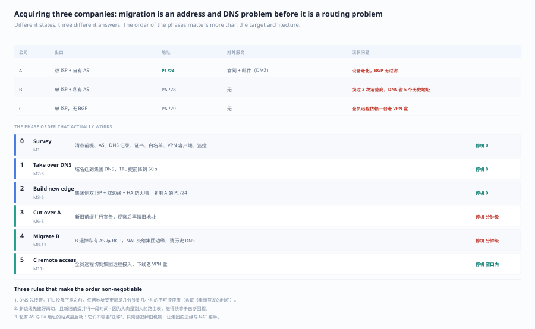
Background: the group acquires three companies, each in a different state:
背景：集团并购 3 家公司，各自情况：
| Company | Exit | Addressing | Public services | Current problems |
|---|---|---|---|---|
| A | Dual ISP + its own AS | PI /24 | Website + mail (DMZ) | Ageing equipment, no BGP filtering |
| B | Single ISP + private AS | PA /28 | None | Changed carrier three times; five stale addresses still in DNS |
| C | Single ISP, no BGP | PA /29 | None | Everyone works remotely through one old VPN box |
| 公司 | 出口 | 地址 | 对外服务 | 现状问题 |
|---|---|---|---|---|
| A | 双 ISP + 自有 AS | PI /24 | 官网 + 邮件（DMZ） | 老化设备，BGP 无过滤 |
| B | 单 ISP + 私有 AS | PA /28 | 无 | 换过 3 次运营商，DNS 里留了 5 个历史地址 |
| C | 单 ISP，无 BGP | PA /29 | 无 | 全员远程依赖一台老 VPN |
The group requires: consolidate into one internet edge within 18 months, keep A's website and mail, unify logging and security policy, and without interrupting business.
集团要求：18 个月内合并为一个互联网边缘，保留 A 的官网与邮件，统一日志与安全策略，不中断业务。
Question: propose the consolidation roadmap (sequence, treatment of addresses and AS, DNS and certificate migration) and "what happens in which window".
问题：给出合并路线（顺序、地址与 AS 处置、DNS 与证书迁移）、以及"哪个窗口做什么"。
Reference solution
参考解析
Core thinking: take over the control plane first (DNS / addresses / AS), then merge the forwarding plane (links / devices / policy), and only then decommission the old exits. Doing it the other way round guarantees an outage.
核心思路：先"接管控制面"（DNS / 地址 / AS），再"合并转发面"（链路 / 设备 / 策略），最后"下线旧出口"。反过来做必然中断。
| Phase | Time | Actions | Downtime |
|---|---|---|---|
| 0 Survey | Month 1 | Asset inventory: prefixes, AS, DNS records, certificates, allow lists, VPN clients, monitoring | None |
| 1 Take over DNS | Months 2–3 | Move every domain to the group DNS (TTL pre-lowered to 60 s); set up authoritative resolution and health checks | None |
| 2 Build the new edge | Months 3–6 | New dual ISP + dual edge + HA firewalls on the group side (reusing A's PI and AS) | None |
| 3 Cut over A | Months 6–8 | Website/mail run with both prefixes in parallel (old IP retained); withdraw the old one after two weeks | ≤5 min per service |
| 4 Migrate B | Months 8–11 | B drops BGP (private AS retired), NAT is done by the group edge; clean up the five stale DNS addresses | None (DNS and exit only) |
| 5 Migrate C | Months 11–14 | C's PA addresses no longer need inbound; remote access folds into the group VPN/ZTNA | One reconnect per user |
| 6 Decommission and accept | Months 14–18 | Remove old links and devices; unify logging; run full failure drills | Planned windows |
| 阶段 | 时间 | 动作 | 停机 |
|---|---|---|---|
| 0 摸底 | 月 1 | 资产清单：前缀、AS、DNS 记录、证书、白名单、VPN 客户端、监控 | 无 |
| 1 接管 DNS | 月 2–3 | 全部域迁到集团 DNS（TTL 提前降到 60 s）；建立权威解析与健康检查 | 无 |
| 2 建新边缘 | 月 3–6 | 集团侧新建双 ISP + 双边缘 + HA 防火墙（沿用 A 的 PI 与 AS） | 无 |
| 3 A 割接 | 月 6–8 | 官网/邮件先"双前缀并存"（旧 IP 保留），观察 2 周再撤旧 | 每服务 ≤5 min |
| 4 B 迁入 | 月 8–11 | B 取消 BGP（私有 AS 退役），改由集团边缘做 NAT；清理 DNS 5 个历史地址 | 无（只改 DNS + 出口） |
| 5 C 迁入 | 月 11–14 | C 的 PA 地址不再需要入向；远程接入并入集团 VPN/ZTNA | 每用户重连 1 次 |
| 6 下线与验收 | 月 14–18 | 拆除旧链路与旧设备；日志统一；做完整故障演练 | 计划内窗口 |
Address and AS disposal matrix:
地址与 AS 处置矩阵：
| Asset | Disposal | Rationale |
|---|---|---|
| A's PI /24 | Keep and keep announcing it as the group's only inbound prefix | PI is the only asset that survives a carrier change without renumbering |
| A's public AS | Keep; B's private AS is retired | With multiple ISPs a private AS creates conflicts and remove-private-as dependencies |
| B/C's PA addresses | Return to the carriers after migration | They expire with the carrier; do not drag history along |
| B's five stale DNS records | Confirm one by one → 301/weighted transition → delete | Stale records are the most common source of "ghost failures" |
| Certificates | Multi-domain/SAN certificates, or migrate domain by domain | Avoids "the certificate changed but a client pinned the old one" |
| 资产 | 处置 | 理由 |
|---|---|---|
| A 的 PI /24 | 保留并继续宣告，作为集团唯一入向前缀 | PI 是唯一"换运营商不重编号"的资产 |
| A 的公网 AS | 保留；B 的私有 AS 退役 | 多 ISP 下私有 AS 有冲突与 remove-private-as 依赖 |
| B/C 的 PA 地址 | 迁出后归还运营商 | 换运营商即失效，不留历史包袱 |
| B 的 5 个历史 DNS 记录 | 逐条确认 → 301/权重过渡 → 删除 | 历史记录是最常见的"幽灵故障源" |
| 证书 | 多域名/SAN 证书，或按域名分批迁移 | 避免"证书换了但客户端 pin 了旧证书" |
Key actions to avoid interruption:
"不中断"的关键动作：
| Risk | Mitigation |
|---|---|
| DNS caching delays the switchover | Lower the TTL to 60 s two weeks in advance; raise it gradually afterwards |
| Allow lists / partners still using old addresses | Run both prefixes in parallel for ≥2 weeks and confirm each one before withdrawal |
| Mail IP reputation | Add SPF/DKIM/DMARC and warm the new IP (ramp volume) before migration |
| Remote-user client configuration | Distribute the new headend address first, run both profiles, then force the switch |
| Rollback | Keep "the old path still works" at every phase and define a rollback criterion (error rate >2% → roll back immediately) |
| 风险 | 缓解 |
|---|---|
| DNS 缓存导致切换滞后 | 提前 2 周把 TTL 降到 60 s，切换后再逐步升回 |
| 白名单/合作伙伴仍用旧 IP | 双前缀并存期 ≥2 周，逐个确认后再撤 |
| 邮件 IP 信誉 | 迁到新 IP 前做 SPF/DKIM/DMARC + IP 预热（逐步放量） |
| 远程用户客户端配置 | 新头端地址先下发，双配置并存，再强制切换 |
| 回滚 | 每个阶段保留"旧路径可用"，并定义回滚判据（错误率 >2% 立即回滚） |
🎯 The most likely follow-up: why not move all three onto a new AS and new addresses "in one go"? — Because addresses and AS numbers are the external world's index into you: DNS, certificates, allow lists, partners, mail reputation and even customers' bookmarks point at them. Doing it in one go makes every external dependency fail simultaneously; phasing it changes only one dependency at a time.
🎯 本题最容易被追问：为什么不把三家都换成新 AS/新地址"一次到位"？—— 因为地址与 AS 是外部世界的索引：DNS、证书、白名单、合作伙伴、邮件信誉、甚至客户的书签都指向它。一次到位的代价是"所有外部依赖同时失效"，而分阶段只让"一个依赖"变化。
Scenario Analysis Framework: The Standard Route for Internet Edge Scenarios · 情景分析框架：互联网边缘类场景的通用套路
1 Ask "how does the business degrade when the exit fails", not "how many carriers"
If you cannot write the degradation action (DNS steering / route switchover / application retry), the design is unfinished
2 Verify redundancy layer by layer: physical path -> PoP -> rack/power -> devices -> links -> state
Any shared layer is a single point; put it in the "single-point inventory"
3 Define trust levels and the DMZ boundary
What can the DMZ reach inside? What is the damage radius once it is compromised?
4 Decide addresses and AS (a ten-year decision)
Inbound services or multiple ISPs -> PI + public AS; otherwise PA with no BGP
5 Decide routing and announcement policy, marking the direction of each attribute
Outbound: LP/weight; inbound: prepending/community; multiple entries into one ISP: MED
6 Decide who owns the stateful devices and how sessions are rebuilt
Where is NAT? How do firewall sessions synchronise? How do old sessions end on failure?
7 Calculate the four capacities: bandwidth (N-1), sessions and ports, FIB, encrypted throughput
8 Design detection: SLA/BFD/BGP plus external multi-location probes (inbound must be measured from outside)
9 Design elasticity: scrubbing/RTBH/WAF/CDN + runbook + graded alerting
10 Hand over acceptance: cable pull, power loss, carrier failure, prefix loss, attack; time each one
① 先问"出口失败时业务怎么降级"，而不是"用几家运营商"
降级动作（DNS 切流/路由切换/应用重试）写不出来 = 方案未完成
② 逐层验证冗余：物理路径 → PoP → 机柜/电源 → 设备 → 链路 → 状态
任何一层共享 = 单点，写进"单点清单"
③ 定信任等级与 DMZ 边界
DMZ 能到内网什么？被攻破后的损害半径是多少？
④ 定地址与 AS（这是十年决策）
有入向服务或多 ISP → PI + 公网 AS；否则 PA + 无 BGP
⑤ 定路由与宣告策略，并标清"属性作用方向"
出向：LP/weight；入向：prepending/community；同 ISP 多入口：MED
⑥ 定状态设备的所有者与会话重建策略
NAT 在哪？防火墙会话怎么同步？故障时旧会话如何结束？
⑦ 算四种容量：带宽（N−1）、会话与端口、FIB、加密吞吐
⑧ 设计检测：SLA/BFD/BGP + 外部多地点探测（入向必须外部测）
⑨ 设计弹性：清洗/RTBH/WAF/CDN + runbook + 分级告警
⑩ 给验收：拔线、断电、运营商故障、前缀丢失、攻击，逐项计时
In one sentence: the internet edge question does not test whether you can configure BGP; it tests whether, in a system you only half control, you can turn each possible failure into predictable behaviour.
一句话总结：互联网边缘题考的不是"你会不会配 BGP"，而是"你能不能在一个你只控制一半的系统里，把失败的可能性逐一变成可预期的行为"。
Chapter Summary · 本章小结
The internet edge looks like a choice of "how many circuits, from how many carriers"; in essence it is designing determinism inside a world you do not control:
互联网边缘表面在选"几条线、几家运营商"，本质上在设计"不可控世界里的确定性"：
| Theme | Essence | Three questions you must answer | Pass/fail criterion |
|---|---|---|---|
| Hosting model | Buying redundancy with money — but redundancy must hold at every layer | How many links? How many devices? Physically separated? | Every single-point failure has an explicit degradation path |
| BGP policy | Outbound is controllable; inbound can only be influenced | Does the attribute affect the outbound or the return path? What is the failure condition? | After switchover the inbound path matches intent (verified by external probes) |
| Stateful devices | The only part of the edge BGP cannot manage | Where is the state? How is it synchronised? How do old sessions end? | New sessions recover within 5 s; established flows break per SLA |
| Addressing and NAT | A ten-year asset plus runtime state | PI or PA? One pool per ISP? | Changing carrier needs no renumbering; sessions are traceable |
| Security boundary | A DMZ is a trust level, not a VLAN | What can the DMZ reach inside? | Lateral movement after compromise is contained and alerted on |
| Elasticity | The capacity to survive attacks lives upstream | What happens when the link is saturated? Who triggers, how fast is recovery? | Drills meet their timing targets; business availability meets its target |
| 主题 | 本质 | 三个必答问题 | 成败判据 |
|---|---|---|---|
| 宿主模型 | 用钱换冗余，但冗余必须逐层成立 | 几条链路？几台设备？物理是否分离？ | 任一单点故障都有明确降级路径 |
| BGP 策略 | 出向可控、入向只能影响 | 属性影响去程还是回程？失效条件是什么？ | 切换后入向符合预期（外部探测验证） |
| 状态设备 | 边缘唯一"BGP 管不到"的部分 | 状态在哪？如何同步？旧会话怎么结束？ | 故障后新会话 5 s 内恢复，存量按 SLA 中断 |
| 地址与 NAT | 十年资产 + 运行时状态 | PI 还是 PA？每 ISP 一个池吗？ | 换运营商不重编号；会话可溯源 |
| 安全边界 | DMZ 是信任等级不是 VLAN | DMZ 能到内网什么？ | 失陷后横向移动被限制并可告警 |
| 弹性 | 抗攻击的能力在上游 | 打满链路怎么办？谁触发、多久恢复？ | 演练计时达标，业务可用性达标 |
Four judgements that run through the whole chapter:
四条贯穿全章的判断：
- Redundancy multiplies, it does not add: exit × state × detection — miss one and the result is zero.
- Less state is more reliable: almost every edge failure traces back to "some piece of state nobody owned".
- Inbound can only be influenced: every "control the inbound path" plan gets sent back and rewritten as "influence + capacity backstop".
- Only what can be verified counts as design: if you cannot write down "who sees what within 30 seconds of a failure", you do not yet have a design.
- 冗余是乘法不是加法：出口 × 状态 × 检测，缺一即零。
- 状态越少越可靠：边缘的每次故障，几乎都能追溯到"某个状态没人负责"。
- 入向只能影响：所有"控制入向"的方案都要被打回，改成"影响 + 容量兜底"。
- 能被验证的才叫设计：写不出"故障后 30 秒内谁会看到什么"，就还没有设计。